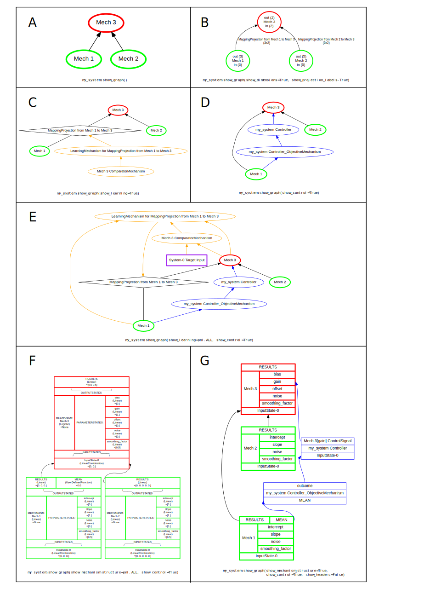

<!DOCTYPE html>
<!--[if IE 8]><html class="no-js lt-ie9" lang="en" > <![endif]-->
<!--[if gt IE 8]><!--> <html class="no-js" lang="en" > <!--<![endif]-->
<head>
  <meta charset="utf-8">
  
  <meta name="viewport" content="width=device-width, initial-scale=1.0">
  
  <title>System &mdash; PsyNeuLink 0.6.0.3+2.gf3dff92 documentation</title>
  

  
  
  
  

  
  <script type="text/javascript" src="_static/js/modernizr.min.js"></script>
  
    
      <script type="text/javascript">
          var DOCUMENTATION_OPTIONS = {
              URL_ROOT:'./',
              VERSION:'0.6.0.3+2.gf3dff92',
              LANGUAGE:'None',
              COLLAPSE_INDEX:false,
              FILE_SUFFIX:'.html',
              HAS_SOURCE:  true,
              SOURCELINK_SUFFIX: '.txt'
          };
      </script>
        <script type="text/javascript" src="_static/jquery.js"></script>
        <script type="text/javascript" src="_static/underscore.js"></script>
        <script type="text/javascript" src="_static/doctools.js"></script>
        <script type="text/javascript" src="https://cdnjs.cloudflare.com/ajax/libs/mathjax/2.7.1/MathJax.js?config=TeX-AMS-MML_HTMLorMML"></script>
    
    <script type="text/javascript" src="_static/js/theme.js"></script>

    

  
  <link rel="stylesheet" href="_static/css/theme.css" type="text/css" />
  <link rel="stylesheet" href="_static/pygments.css" type="text/css" />
    <link rel="index" title="Index" href="genindex.html" />
    <link rel="search" title="Search" href="search.html" /> 
</head>

<body class="wy-body-for-nav">

   
  <div class="wy-grid-for-nav">
    
    <nav data-toggle="wy-nav-shift" class="wy-nav-side">
      <div class="wy-side-scroll">
        <div class="wy-side-nav-search" >
          

          
            <a href="index.html" class="icon icon-home"> PsyNeuLink
          

          
          </a>

          
            
            
              <div class="version">
                0.6.0.3+2
              </div>
            
          

          
<div role="search">
  <form id="rtd-search-form" class="wy-form" action="search.html" method="get">
    <input type="text" name="q" placeholder="Search docs" />
    <input type="hidden" name="check_keywords" value="yes" />
    <input type="hidden" name="area" value="default" />
  </form>
</div>

          
        </div>

        <div class="wy-menu wy-menu-vertical" data-spy="affix" role="navigation" aria-label="main navigation">
          
            
            
              
            
            
              <ul>
<li class="toctree-l1"><a class="reference internal" href="index.html">Welcome to PsyNeuLink </a></li>
<li class="toctree-l1"><a class="reference internal" href="BasicsAndSampler.html">Basics and Sampler</a></li>
<li class="toctree-l1"><a class="reference internal" href="QuickReference.html">Quick Reference</a></li>
<li class="toctree-l1"><a class="reference internal" href="Core.html">Core</a></li>
<li class="toctree-l1"><a class="reference internal" href="Library.html">Library</a></li>
<li class="toctree-l1"><a class="reference internal" href="ContributorsGuide.html">Contributors Guide</a></li>
</ul>

            
          
        </div>
      </div>
    </nav>

    <section data-toggle="wy-nav-shift" class="wy-nav-content-wrap">

      
      <nav class="wy-nav-top" aria-label="top navigation">
        
          <i data-toggle="wy-nav-top" class="fa fa-bars"></i>
          <a href="index.html">PsyNeuLink</a>
        
      </nav>


      <div class="wy-nav-content">
        
        <div class="rst-content">
        
          


<div role="navigation" aria-label="breadcrumbs navigation">

  <ul class="wy-breadcrumbs">
    
      <li><a href="index.html">Docs</a> &raquo;</li>
        
      <li>System</li>
    
    
      <li class="wy-breadcrumbs-aside">
        
            
            <a href="_sources/System.rst.txt" rel="nofollow"> View page source</a>
          
        
      </li>
    
  </ul>

  
  <hr/>
</div>
          <div role="main" class="document" itemscope="itemscope" itemtype="http://schema.org/Article">
           <div itemprop="articleBody">
            
  <div class="section" id="module-psyneulink.core.components.system">
<span id="system"></span><h1>System<a class="headerlink" href="#module-psyneulink.core.components.system" title="Permalink to this headline">¶</a></h1>
<div class="section" id="overview">
<span id="system-overview"></span><h2>Overview<a class="headerlink" href="#overview" title="Permalink to this headline">¶</a></h2>
<p>A System is a <a class="reference internal" href="Composition.html"><span class="doc">Composition</span></a> that is a collection of <a class="reference internal" href="Process.html"><span class="doc">Processes</span></a> all of which are executed
together. Executing a System executes all of the <a class="reference internal" href="Mechanism.html"><span class="doc">Mechanisms</span></a> in its Processes in a structured order.
<a class="reference internal" href="Projection.html"><span class="doc">Projections</span></a> between Mechanisms in different Processes within the System are permitted, as are recurrent
Projections, but Projections from Mechanisms in other Systems are ignored (PsyNeuLink does not support ESP).  A System
can also be assigned a <a class="reference internal" href="ControlMechanism.html"><span class="doc">ControlMechanism</span></a> as its <a class="reference internal" href="#psyneulink.core.components.system.System.controller" title="psyneulink.core.components.system.System.controller"><code class="xref any py py-attr docutils literal"><span class="pre">controller</span></code></a>, that can be
used to control parameters of other <a class="reference internal" href="Mechanism.html"><span class="doc">Mechanisms</span></a> (or their <a class="reference internal" href="Mechanism.html#psyneulink.core.components.mechanisms.mechanism.Mechanism_Base.function" title="psyneulink.core.components.mechanisms.mechanism.Mechanism_Base.function"><code class="xref any py py-attr docutils literal"><span class="pre">functions</span></code></a> in the
System.</p>
</div>
<div class="section" id="creating-a-system">
<span id="system-creation"></span><h2>Creating a System<a class="headerlink" href="#creating-a-system" title="Permalink to this headline">¶</a></h2>
<p>Systems are created by instantiating the <a class="reference internal" href="#"><span class="doc">System</span></a> class.  If no arguments are provided, a System with a single <a class="reference internal" href="Process.html"><span class="doc">Process</span></a>
containing a single <code class="xref any docutils literal"><span class="pre">default_mechanism</span></code> is created.  More commonly, a System is
created from one or more <a class="reference internal" href="Process.html"><span class="doc">Processes</span></a> that are specified in the <strong>processes</strong>  argument of the <a class="reference internal" href="#"><span class="doc">System</span></a>
class, and listed in its <a class="reference internal" href="#psyneulink.core.components.system.System.processes" title="psyneulink.core.components.system.System.processes"><code class="xref any py py-attr docutils literal"><span class="pre">processes</span></code></a> attribute.</p>
<div class="admonition note">
<p class="first admonition-title">Note</p>
<p class="last">At present, only <a class="reference internal" href="Process.html"><span class="doc">Processes</span></a> can be assigned to a System; <a class="reference internal" href="Mechanism.html"><span class="doc">Mechanisms</span></a> cannot be assigned
directly to a System.  They must be assigned to the <a class="reference internal" href="Process.html#process-pathway"><span class="std std-ref">pathway</span></a> of a Process, and then that Process
must be included in the <strong>processes</strong> argument of the <a class="reference internal" href="#"><span class="doc">System</span></a> class.</p>
</div>
<div class="section" id="specifying-control">
<span id="system-control-specification"></span><h3><em>Specifying Control</em><a class="headerlink" href="#specifying-control" title="Permalink to this headline">¶</a></h3>
<p>A controller can also be specified for the System, in the <strong>controller</strong> argument of the <a class="reference internal" href="#"><span class="doc">System</span></a>.  This can be an
existing <a class="reference internal" href="ControlMechanism.html"><span class="doc">Control Mechanisms</span></a>, a constructor for one, or a class of ControlMechanism in which case a default
instance of that class will be created.  If an existing ControlMechanism or the constructor for one is used, then
the <a class="reference internal" href="ControlMechanism.html#controlmechanism-objectivemechanism"><span class="std std-ref">OutputStates it monitors</span></a> and the <a class="reference internal" href="ControlMechanism.html#controlmechanism-control-signals"><span class="std std-ref">parameters it controls</span></a> can be specified using its <a class="reference internal" href="ControlMechanism.html#psyneulink.core.components.mechanisms.modulatory.control.controlmechanism.ControlMechanism.objective_mechanism" title="psyneulink.core.components.mechanisms.modulatory.control.controlmechanism.ControlMechanism.objective_mechanism"><code class="xref any py py-attr docutils literal"><span class="pre">objective_mechanism</span></code></a> and <a class="reference internal" href="ControlMechanism.html#psyneulink.core.components.mechanisms.modulatory.control.controlmechanism.ControlMechanism.control_signals" title="psyneulink.core.components.mechanisms.modulatory.control.controlmechanism.ControlMechanism.control_signals"><code class="xref any py py-attr docutils literal"><span class="pre">control_signals</span></code></a>
attributes, respectively.  In addition, these can be specified in the <strong>monitor_for_control</strong> and <strong>control_signal</strong>
arguments of the <a class="reference internal" href="#"><span class="doc">System</span></a>, as described below.</p>
<ul>
<li><p class="first"><strong>monitor_for_control</strong> argument – used to specify OutputStates of Mechanisms in the System that should be
monitored by the <a class="reference internal" href="ObjectiveMechanism.html"><span class="doc">ObjectiveMechanism</span></a> associated with the System’s <a class="reference internal" href="#psyneulink.core.components.system.System.controller" title="psyneulink.core.components.system.System.controller"><code class="xref any py py-attr docutils literal"><span class="pre">controller</span></code></a> (see
<a class="reference internal" href="ControlMechanism.html#controlmechanism-objectivemechanism"><span class="std std-ref">Objective Mechanism</span></a>);  these are used in addition to any specified for the ControlMechanism or
its ObjectiveMechanism.  These can be specified in the <strong>monitor_for_control</strong> argument of the <a class="reference internal" href="#"><span class="doc">System</span></a> using
any of the ways used to specify the <em>monitored_output_states</em> for an ObjectiveMechanism (see
<a class="reference internal" href="ObjectiveMechanism.html#objectivemechanism-monitor"><span class="std std-ref">Monitor</span></a>).  In addition, the <strong>monitor_for_control</strong> argument supports two
other forms of specification:</p>
<ul class="simple">
<li><strong>string</strong> – must be the <a class="reference internal" href="OutputState.html#psyneulink.core.components.states.outputstate.OutputState.name" title="psyneulink.core.components.states.outputstate.OutputState.name"><code class="xref any py py-attr docutils literal"><span class="pre">name</span></code></a> of an <a class="reference internal" href="OutputState.html"><span class="doc">OutputState</span></a> of a <a class="reference internal" href="Mechanism.html"><span class="doc">Mechanism</span></a> in the System
(see third example under <a class="reference internal" href="#system-control-examples"><span class="std std-ref">Specifying Control for a System</span></a>).  This can be used anywhere a reference to an OutputState can
ordinarily be used (e.g., in an <a class="reference internal" href="InputState.html#inputstate-tuple-specification"><span class="std std-ref">InputState tuple specification</span></a>). Any OutputState
with a name matching the string will be monitored, including ones with the same name that belong to different
Mechanisms within the System. If an OutputState of a particular Mechanism is desired, and it shares its name with
other Mechanisms in the System, then it must be referenced explicitly (see <a class="reference internal" href="InputState.html#inputstate-specification"><span class="std std-ref">InputState specification</span></a>, and examples under <a class="reference internal" href="#system-control-examples"><span class="std std-ref">Specifying Control for a System</span></a>).</li>
<li><strong>MonitoredOutputStatesOption</strong> – must be a value of <code class="xref any docutils literal"><span class="pre">MonitoredOutputStatesOption</span></code>, and must appear alone or as a
single item in the list specifying the <strong>monitor_for_control</strong> argument;  any other specification(s) included in
the list will take precedence.  The MonitoredOutputStatesOption applies to all of the Mechanisms in the System
except its <a class="reference internal" href="#psyneulink.core.components.system.System.controller" title="psyneulink.core.components.system.System.controller"><code class="xref any py py-attr docutils literal"><span class="pre">controller</span></code></a> and <a class="reference internal" href="LearningMechanism.html"><span class="doc">LearningMechanisms</span></a>. The
<em>PRIMARY_OUTPUT_STATES</em> value specifies that the <a class="reference internal" href="OutputState.html#outputstate-primary"><span class="std std-ref">primary OutputState</span></a> of every Mechanism be
monitored, whereas <em>ALL_OUTPUT_STATES</em> specifies that <em>every</em> OutputState of every Mechanism be monitored.</li>
</ul>
<p>The default for the <strong>monitor_for_control</strong> argument is <em>MonitoredOutputStatesOption.PRIMARY_OUTPUT_STATES</em>.
The OutputStates specified in the <strong>monitor_for_control</strong> argument are added to any already specified for the
ControlMechanism’s <a class="reference internal" href="ControlMechanism.html#psyneulink.core.components.mechanisms.modulatory.control.controlmechanism.ControlMechanism.objective_mechanism" title="psyneulink.core.components.mechanisms.modulatory.control.controlmechanism.ControlMechanism.objective_mechanism"><code class="xref any py py-attr docutils literal"><span class="pre">objective_mechanism</span></code></a>, and the full set is listed in
the ControlMechanism’s <a class="reference internal" href="EVCControlMechanism.html#psyneulink.library.components.mechanisms.modulatory.control.evc.evccontrolmechanism.EVCControlMechanism.monitored_output_states" title="psyneulink.library.components.mechanisms.modulatory.control.evc.evccontrolmechanism.EVCControlMechanism.monitored_output_states"><code class="xref any py py-attr docutils literal"><span class="pre">monitored_output_states</span></code></a> attribute, and its
ObjectiveMechanism’s <code class="xref any docutils literal"><span class="pre">monitored_output_states</span></code> attribute).</p>
</li>
</ul>
<ul class="simple">
<li><strong>control_signals</strong> argument – used to specify the parameters of Components in the System to be controlled. These
can be specified in any of the ways used to <a class="reference internal" href="ControlMechanism.html#controlmechanism-control-signals"><span class="std std-ref">specify ControlSignals</span></a> in the
<em>control_signals</em> argument of a ControlMechanism. These are added to any <a class="reference internal" href="ControlSignal.html"><span class="doc">ControlSignals</span></a> that have
already been specified for the <a class="reference internal" href="#psyneulink.core.components.system.System.controller" title="psyneulink.core.components.system.System.controller"><code class="xref any py py-attr docutils literal"><span class="pre">controller</span></code></a> (listed in its <a class="reference internal" href="ControlMechanism.html#psyneulink.core.components.mechanisms.modulatory.control.controlmechanism.ControlMechanism.control_signals" title="psyneulink.core.components.mechanisms.modulatory.control.controlmechanism.ControlMechanism.control_signals"><code class="xref any py py-attr docutils literal"><span class="pre">control_signals</span></code></a> attribute), and any parameters that have directly been <a class="reference internal" href="ParameterState.html#parameterstate-specification"><span class="std std-ref">specified for
control</span></a> within the System (see <a class="reference internal" href="#system-control"><span class="std std-ref">Control</span></a> below for additional details).</li>
</ul>
</div>
</div>
<div class="section" id="structure">
<span id="system-structure"></span><h2>Structure<a class="headerlink" href="#structure" title="Permalink to this headline">¶</a></h2>
<p>The Components of a System are shown in the figure below and summarized in the sections that follow.</p>
<div class="figure" id="id5">
<span id="system-full-fig"></span><a class="reference internal image-reference" href="_images/System_full_fig.svg"></a>
<p class="caption"><span class="caption-text">Two <a class="reference internal" href="Process.html"><span class="doc">Processes</span></a> are shown, both belonging to the same System.  Each Process has a
series of <a class="reference internal" href="ProcessingMechanism.html"><span class="doc">ProcessingMechanisms</span></a> linked by <a class="reference internal" href="MappingProjection.html"><span class="doc">MappingProjections</span></a>,
that converge on a common final ProcessingMechanism.  Each ProcessingMechanism is labeled with its designation in
the System.  The <a class="reference internal" href="Utilities.html#psyneulink.core.globals.utilities.NodeRole.TERMINAL" title="psyneulink.core.globals.utilities.NodeRole.TERMINAL"><code class="xref any py py-attr docutils literal"><span class="pre">TERMINAL</span></code></a> Mechanism for both Processes projects to an <a class="reference internal" href="ObjectiveMechanism.html"><span class="doc">ObjectiveMechanism</span></a> that is used to
drive <a class="reference internal" href="LearningProjection.html"><span class="doc">learning</span></a> in Process B. It also projects to a separate ObjectiveMechanism that is used
for control of ProcessingMechanisms in both Processes A and B.  Note that the Mechanisms and
Projections responsible for learning and control belong to the System and can monitor and/or control Mechanisms
belonging to more than one Process (as shown for control in this figure).</span></p>
</div>
<div class="section" id="mechanisms">
<span id="system-mechanisms"></span><h3><em>Mechanisms</em><a class="headerlink" href="#mechanisms" title="Permalink to this headline">¶</a></h3>
<p>The <a class="reference internal" href="Mechanism.html"><span class="doc">Mechanisms</span></a> in a System are assigned designations based on the position they occupy in the <a class="reference internal" href="#psyneulink.core.components.system.System.graph" title="psyneulink.core.components.system.System.graph"><code class="xref any py py-attr docutils literal"><span class="pre">graph</span></code></a> and/or the role they play in a System:</p>
<blockquote>
<div><p><a class="reference internal" href="Utilities.html#psyneulink.core.globals.utilities.NodeRole.ORIGIN" title="psyneulink.core.globals.utilities.NodeRole.ORIGIN"><code class="xref any py py-attr docutils literal"><span class="pre">ORIGIN</span></code></a>: receives input to the System (provided in the <a class="reference internal" href="#psyneulink.core.components.system.System.execute" title="psyneulink.core.components.system.System.execute"><code class="xref any py py-meth docutils literal"><span class="pre">execute</span></code></a> or <code class="xref any docutils literal"><span class="pre">run</span></code> from any other <a class="reference internal" href="ProcessingMechanism.html"><span class="doc">ProcessingMechanisms</span></a>.</p>
<p><a class="reference internal" href="Utilities.html#psyneulink.core.globals.utilities.NodeRole.TERMINAL" title="psyneulink.core.globals.utilities.NodeRole.TERMINAL"><code class="xref any py py-attr docutils literal"><span class="pre">TERMINAL</span></code></a>: provides output from the System, and does not send Projections to any other ProcessingMechanisms.</p>
<p><code class="xref any docutils literal"><span class="pre">SINGLETON</span></code>: both an <a class="reference internal" href="Utilities.html#psyneulink.core.globals.utilities.NodeRole.ORIGIN" title="psyneulink.core.globals.utilities.NodeRole.ORIGIN"><code class="xref any py py-attr docutils literal"><span class="pre">ORIGIN</span></code></a> and a <a class="reference internal" href="Utilities.html#psyneulink.core.globals.utilities.NodeRole.TERMINAL" title="psyneulink.core.globals.utilities.NodeRole.TERMINAL"><code class="xref any py py-attr docutils literal"><span class="pre">TERMINAL</span></code></a> Mechanism.</p>
<p><code class="xref any docutils literal"><span class="pre">INITIALIZE_CYCLE</span></code>: sends a Projection that closes a recurrent loop; can be assigned an initial value.</p>
<p><a class="reference internal" href="Utilities.html#psyneulink.core.globals.utilities.NodeRole.CYCLE" title="psyneulink.core.globals.utilities.NodeRole.CYCLE"><code class="xref any py py-attr docutils literal"><span class="pre">CYCLE</span></code></a>: receives a Projection that closes a recurrent loop.</p>
<p><code class="xref any docutils literal"><span class="pre">CONTROL</span></code>: monitors the value of another Mechanism for use in controlling parameter values.</p>
<p><a class="reference internal" href="Utilities.html#psyneulink.core.globals.utilities.NodeRole.LEARNING" title="psyneulink.core.globals.utilities.NodeRole.LEARNING"><code class="xref any py py-attr docutils literal"><span class="pre">LEARNING</span></code></a>: monitors the value of another Mechanism for use in learning.</p>
<p><a class="reference internal" href="Utilities.html#psyneulink.core.globals.utilities.NodeRole.TARGET" title="psyneulink.core.globals.utilities.NodeRole.TARGET"><code class="xref any py py-attr docutils literal"><span class="pre">TARGET</span></code></a>: ComparatorMechanism that monitors a <a class="reference internal" href="Utilities.html#psyneulink.core.globals.utilities.NodeRole.TERMINAL" title="psyneulink.core.globals.utilities.NodeRole.TERMINAL"><code class="xref any py py-attr docutils literal"><span class="pre">TERMINAL</span></code></a> Mechanism of a Process and compares it to a corresponding
value provided in the <a class="reference internal" href="#psyneulink.core.components.system.System.execute" title="psyneulink.core.components.system.System.execute"><code class="xref any py py-meth docutils literal"><span class="pre">execute</span></code></a> or <a class="reference internal" href="#psyneulink.core.components.system.System.run" title="psyneulink.core.components.system.System.run"><code class="xref any py py-meth docutils literal"><span class="pre">run</span></code></a> method.</p>
<p><a class="reference internal" href="Utilities.html#psyneulink.core.globals.utilities.NodeRole.INTERNAL" title="psyneulink.core.globals.utilities.NodeRole.INTERNAL"><code class="xref any py py-attr docutils literal"><span class="pre">INTERNAL</span></code></a>: ProcessingMechanism that does not fall into any of the categories above.</p>
<div class="admonition note">
<p class="first admonition-title">Note</p>
<p class="last">Any <a class="reference internal" href="Utilities.html#psyneulink.core.globals.utilities.NodeRole.ORIGIN" title="psyneulink.core.globals.utilities.NodeRole.ORIGIN"><code class="xref any py py-attr docutils literal"><span class="pre">ORIGIN</span></code></a> and <a class="reference internal" href="Utilities.html#psyneulink.core.globals.utilities.NodeRole.TERMINAL" title="psyneulink.core.globals.utilities.NodeRole.TERMINAL"><code class="xref any py py-attr docutils literal"><span class="pre">TERMINAL</span></code></a> Mechanisms of a System must be, respectively, the <a class="reference internal" href="Utilities.html#psyneulink.core.globals.utilities.NodeRole.ORIGIN" title="psyneulink.core.globals.utilities.NodeRole.ORIGIN"><code class="xref any py py-attr docutils literal"><span class="pre">ORIGIN</span></code></a> or <a class="reference internal" href="Utilities.html#psyneulink.core.globals.utilities.NodeRole.TERMINAL" title="psyneulink.core.globals.utilities.NodeRole.TERMINAL"><code class="xref any py py-attr docutils literal"><span class="pre">TERMINAL</span></code></a> of any
Process(es) to which they belong.  However, it is not necessarily the case that the <a class="reference internal" href="Utilities.html#psyneulink.core.globals.utilities.NodeRole.ORIGIN" title="psyneulink.core.globals.utilities.NodeRole.ORIGIN"><code class="xref any py py-attr docutils literal"><span class="pre">ORIGIN</span></code></a> and/or <a class="reference internal" href="Utilities.html#psyneulink.core.globals.utilities.NodeRole.TERMINAL" title="psyneulink.core.globals.utilities.NodeRole.TERMINAL"><code class="xref any py py-attr docutils literal"><span class="pre">TERMINAL</span></code></a>
Mechanism of a Process is also the <a class="reference internal" href="Utilities.html#psyneulink.core.globals.utilities.NodeRole.ORIGIN" title="psyneulink.core.globals.utilities.NodeRole.ORIGIN"><code class="xref any py py-attr docutils literal"><span class="pre">ORIGIN</span></code></a> and/or <a class="reference internal" href="Utilities.html#psyneulink.core.globals.utilities.NodeRole.TERMINAL" title="psyneulink.core.globals.utilities.NodeRole.TERMINAL"><code class="xref any py py-attr docutils literal"><span class="pre">TERMINAL</span></code></a> of a System to which the Process belongs (see
<code class="xref any docutils literal"><span class="pre">example</span></code>).</p>
</div>
<div class="admonition note">
<p class="first admonition-title">Note</p>
<p class="last">designations are stored in the <code class="xref any docutils literal"><span class="pre">systems</span></code> attribute of a <a class="reference internal" href="Mechanism.html"><span class="doc">Mechanism</span></a>.</p>
</div>
</div></blockquote>
</div>
<div class="section" id="graph">
<span id="system-graph"></span><h3><em>Graph</em><a class="headerlink" href="#graph" title="Permalink to this headline">¶</a></h3>
<p>When a System is created, a graph is constructed that describes the <a class="reference internal" href="Projection.html"><span class="doc">Projections</span></a> (edges) among its
<a class="reference internal" href="Mechanism.html"><span class="doc">Mechanisms</span></a> (nodes). The graph is assigned to the System’s <a class="reference internal" href="#psyneulink.core.components.system.System.graph" title="psyneulink.core.components.system.System.graph"><code class="xref any py py-attr docutils literal"><span class="pre">graph</span></code></a> attribute.  A
System’s <a class="reference internal" href="#psyneulink.core.components.system.System.graph" title="psyneulink.core.components.system.System.graph"><code class="xref any py py-attr docutils literal"><span class="pre">graph</span></code></a> can be displayed using its <a class="reference internal" href="#psyneulink.core.components.system.System.show_graph" title="psyneulink.core.components.system.System.show_graph"><code class="xref any py py-meth docutils literal"><span class="pre">System.show_graph</span></code></a> method.  The <a class="reference internal" href="#psyneulink.core.components.system.System.graph" title="psyneulink.core.components.system.System.graph"><code class="xref any py py-attr docutils literal"><span class="pre">graph</span></code></a> is stored as a dictionary of dependencies that can be passed to graph theoretical tools for
analysis.  A System can have recurrent Processing pathways, such as feedback loops;  that is, the System’s <code class="xref any docutils literal"><span class="pre">graph</span></code> to determine the order in
which its Mechanisms are executed.  To do so in an orderly manner, however, the graph must be <em>acyclic</em>.  To address
this, PsyNeuLink constructs an <a class="reference internal" href="#psyneulink.core.components.system.System.execution_graph" title="psyneulink.core.components.system.System.execution_graph"><code class="xref any py py-attr docutils literal"><span class="pre">execution_graph</span></code></a> from the System’s <a class="reference internal" href="#psyneulink.core.components.system.System.graph" title="psyneulink.core.components.system.System.graph"><code class="xref any py py-attr docutils literal"><span class="pre">graph</span></code></a>. If the  System is acyclic, these are the same. If the System is cyclic, then the <a class="reference internal" href="#psyneulink.core.components.system.System.execution_graph" title="psyneulink.core.components.system.System.execution_graph"><code class="xref any py py-attr docutils literal"><span class="pre">execution_graph</span></code></a> is a subset of the <a class="reference internal" href="#psyneulink.core.components.system.System.graph" title="psyneulink.core.components.system.System.graph"><code class="xref any py py-attr docutils literal"><span class="pre">graph</span></code></a> in which the dependencies (edges)
associated with Projections that close a loop have been removed. Note that this only impacts the order of execution;
the Projections themselves remain in effect, and will be fully functional during the execution of the Mechanisms
to and from which they project (see <a class="reference internal" href="#system-execution"><span class="std std-ref">Execution</span></a> below for a more detailed description).</p>
</div>
<div class="section" id="scheduler">
<span id="system-scheduler"></span><h3><em>Scheduler</em><a class="headerlink" href="#scheduler" title="Permalink to this headline">¶</a></h3>
<p>Every System has two <a class="reference internal" href="Scheduler.html"><span class="doc">Schedulers</span></a>, one that handles the ordering of execution of its Components for
<a class="reference internal" href="#system-execution-processing"><span class="std std-ref">processing</span></a> (assigned to its <a class="reference internal" href="ContributorsGuide.html#scheduler"><span class="std std-ref">Scheduler</span></a> attribute), and one that
does the same for <a class="reference internal" href="#system-execution-learning"><span class="std std-ref">learning</span></a> (assigned to its <code class="xref any docutils literal"><span class="pre">scheduler_learning</span></code> attribute).
The <a class="reference internal" href="ContributorsGuide.html#scheduler"><span class="std std-ref">Scheduler</span></a> can be assigned in the <strong>scheduler</strong> argument of the System’s constructor;  if it is not
specified, a default <a class="reference internal" href="Scheduler.html"><span class="doc">Scheduler</span></a> is created automatically.   The <code class="xref any docutils literal"><span class="pre">scheduler_learning</span></code> is always assigned automatically.
The System’s Schedulers base the ordering of execution of its Components based on the order in which they are listed
in the <a class="reference internal" href="Process.html#psyneulink.core.components.process.Process.pathway" title="psyneulink.core.components.process.Process.pathway"><code class="xref any py py-attr docutils literal"><span class="pre">pathway</span></code></a>s of the <a class="reference internal" href="Process.html"><span class="doc">Processes</span></a> used to construct the System, constrained by any
<a class="reference internal" href="Condition.html"><span class="doc">Conditions</span></a> that have been created for individual Components and assigned to the System’s Schedulers (see
<a class="reference internal" href="Scheduler.html"><span class="doc">Scheduler</span></a>, <a class="reference internal" href="Condition.html#condition-creation"><span class="std std-ref">Condition</span></a>, <a class="reference internal" href="#system-execution-processing"><span class="std std-ref">Processing</span></a>, and <a class="reference internal" href="#system-execution-learning"><span class="std std-ref">Learning</span></a> for
additional details).  Both schedulers maintain a <a class="reference internal" href="Time.html#psyneulink.core.scheduling.time.Clock" title="psyneulink.core.scheduling.time.Clock"><code class="xref any py py-class docutils literal"><span class="pre">Clock</span></code></a> that can be used to access their current <a class="reference internal" href="Time.html#time-overview"><span class="std std-ref">time</span></a>.</p>
</div>
<div class="section" id="control">
<span id="system-control"></span><h3><em>Control</em><a class="headerlink" href="#control" title="Permalink to this headline">¶</a></h3>
<p>A System can be assigned a <a class="reference internal" href="ControlMechanism.html"><span class="doc">Control Mechanisms</span></a> as its <a class="reference internal" href="#psyneulink.core.components.system.System.controller" title="psyneulink.core.components.system.System.controller"><code class="xref any py py-attr docutils literal"><span class="pre">controller</span></code></a>, that can be  used to
control parameters of other <a class="reference internal" href="Mechanism.html"><span class="doc">Mechanisms</span></a> in the System. Although any number of ControlMechanism can be
assigned to and executed within a System, a System can have only one <a class="reference internal" href="#psyneulink.core.components.system.System.controller" title="psyneulink.core.components.system.System.controller"><code class="xref any py py-attr docutils literal"><span class="pre">controller</span></code></a>, that is
executed after all of the other Components in the System have been executed, including any other ControlMechanisms (see
<a class="reference internal" href="#system-execution"><span class="std std-ref">System Execution</span></a>). When a ControlMechanism is assigned to or created by a System, it inherits
specifications made for the System as follows:</p>
<blockquote>
<div><ul class="simple">
<li>the OutputStates specified to be monitored in the System’s <strong>monitor_for_control</strong> argument are added to those
that may have already been specified for the ControlMechanism’s <a class="reference internal" href="ControlMechanism.html#psyneulink.core.components.mechanisms.modulatory.control.controlmechanism.ControlMechanism.objective_mechanism" title="psyneulink.core.components.mechanisms.modulatory.control.controlmechanism.ControlMechanism.objective_mechanism"><code class="xref any py py-attr docutils literal"><span class="pre">objective_mechanism</span></code></a> (the full set is listed in the ControlMechanism’s <a class="reference internal" href="EVCControlMechanism.html#psyneulink.library.components.mechanisms.modulatory.control.evc.evccontrolmechanism.EVCControlMechanism.monitored_output_states" title="psyneulink.library.components.mechanisms.modulatory.control.evc.evccontrolmechanism.EVCControlMechanism.monitored_output_states"><code class="xref any py py-attr docutils literal"><span class="pre">monitored_output_states</span></code></a> attribute, and its ObjectiveMechanism’s <code class="xref any docutils literal"><span class="pre">monitored_output_states</span></code> attribute); see <a class="reference internal" href="#system-control-specification"><span class="std std-ref">Specifying Control</span></a> for additional details of how
to specify OutputStates to be monitored.</li>
<li>a <a class="reference internal" href="ControlSignal.html"><span class="doc">ControlSignal</span></a> and <a class="reference internal" href="ControlProjection.html"><span class="doc">ControlProjection</span></a> is assigned to the ControlMechanism for every parameter that has been
<a class="reference internal" href="ParameterState.html#parameterstate-specification"><span class="std std-ref">specified for control</span></a> in the System;  these are added to any that the
ControlMechanism may already have (listed in its <a class="reference internal" href="ControlMechanism.html#psyneulink.core.components.mechanisms.modulatory.control.controlmechanism.ControlMechanism.control_signals" title="psyneulink.core.components.mechanisms.modulatory.control.controlmechanism.ControlMechanism.control_signals"><code class="xref any py py-attr docutils literal"><span class="pre">control_signals</span></code></a> attribute).</li>
</ul>
</div></blockquote>
<p>See <a class="reference internal" href="#system-control-specification"><span class="std std-ref">Specifying Control</span></a> above, <a class="reference internal" href="ControlMechanism.html"><span class="doc">ControlMechanism</span></a> and <a class="reference internal" href="ModulatorySignal.html#modulatorysignal-modulation"><span class="std std-ref">Modulation</span></a>
for details of how control operates, and <a class="reference internal" href="#system-execution-control"><span class="std std-ref">Control</span></a> below for a description of how it is engaged
when a System is executed. The control Components of a System can be displayed using the System’s <a class="reference internal" href="#psyneulink.core.components.system.System.show_graph" title="psyneulink.core.components.system.System.show_graph"><code class="xref any py py-meth docutils literal"><span class="pre">show_graph</span></code></a> method with its <strong>show_control</strong> argument assigned as <code class="xref any docutils literal"><span class="pre">True</span></code>.</p>
</div>
<div class="section" id="learning">
<span id="system-learning"></span><h3><em>Learning</em><a class="headerlink" href="#learning" title="Permalink to this headline">¶</a></h3>
<p>A System cannot itself be specified for learning.  However, if learning has been specified for any of its <a class="reference internal" href="#psyneulink.core.components.system.System.processes" title="psyneulink.core.components.system.System.processes"><code class="xref any py py-attr docutils literal"><span class="pre">processes</span></code></a>, then it will be <a class="reference internal" href="LearningMechanism.html#learningmechanism-learning-configurations"><span class="std std-ref">implemented</span></a> and <a class="reference internal" href="#system-execution-learning"><span class="std std-ref">executed</span></a> as part of the System.  Note, however, that for the learning Components of a Process to
be implemented by a System, learning must be <a class="reference internal" href="Process.html#process-learning-specification"><span class="std std-ref">specified for the entire Process</span></a>. The
learning Components of a System can be displayed using the System’s <a class="reference internal" href="#psyneulink.core.components.system.System.show_graph" title="psyneulink.core.components.system.System.show_graph"><code class="xref any py py-meth docutils literal"><span class="pre">System.show_graph</span></code></a> method with its
<strong>show_learning</strong> argument assigned as <code class="xref any docutils literal"><span class="pre">True</span></code> or <em>ALL</em>.</p>
</div>
</div>
<div class="section" id="execution">
<span id="system-execution"></span><h2>Execution<a class="headerlink" href="#execution" title="Permalink to this headline">¶</a></h2>
<p>A System can be executed by calling either its <a class="reference internal" href="#psyneulink.core.components.system.System.execute" title="psyneulink.core.components.system.System.execute"><code class="xref any py py-meth docutils literal"><span class="pre">execute</span></code></a> or <a class="reference internal" href="#psyneulink.core.components.system.System.execute" title="psyneulink.core.components.system.System.execute"><code class="xref any py py-meth docutils literal"><span class="pre">run</span></code></a> methods.
<a class="reference internal" href="#psyneulink.core.components.system.System.execute" title="psyneulink.core.components.system.System.execute"><code class="xref any py py-meth docutils literal"><span class="pre">execute</span></code></a> executes the System once; that is, it executes a single <a class="reference internal" href="Time.html#psyneulink.core.scheduling.time.TimeScale.TRIAL" title="psyneulink.core.scheduling.time.TimeScale.TRIAL"><code class="xref any py py-attr docutils literal"><span class="pre">TRIAL</span></code></a>.
<a class="reference internal" href="#psyneulink.core.components.system.System.run" title="psyneulink.core.components.system.System.run"><code class="xref any py py-meth docutils literal"><span class="pre">run</span></code></a> allows a series of <a class="reference internal" href="Time.html#psyneulink.core.scheduling.time.TimeScale.TRIAL" title="psyneulink.core.scheduling.time.TimeScale.TRIAL"><code class="xref any py py-attr docutils literal"><span class="pre">TRIAL</span></code></a>s to be executed, one for each input in the <strong>inputs</strong> argument
of the call to <a class="reference internal" href="#psyneulink.core.components.system.System.run" title="psyneulink.core.components.system.System.run"><code class="xref any py py-meth docutils literal"><span class="pre">run</span></code></a>.  For each <a class="reference internal" href="Time.html#psyneulink.core.scheduling.time.TimeScale.TRIAL" title="psyneulink.core.scheduling.time.TimeScale.TRIAL"><code class="xref any py py-attr docutils literal"><span class="pre">TRIAL</span></code></a>, it makes a series of calls to the <a class="reference internal" href="Scheduler.html#psyneulink.core.scheduling.scheduler.Scheduler.run" title="psyneulink.core.scheduling.scheduler.Scheduler.run"><code class="xref any py py-meth docutils literal"><span class="pre">run</span></code></a>
method of the relevant <a class="reference internal" href="Scheduler.html"><span class="doc">Scheduler</span></a> (see <a class="reference internal" href="#system-execution-processing"><span class="std std-ref">Processing</span></a> and <a class="reference internal" href="#system-execution-learning"><span class="std std-ref">Learning</span></a> below), and
executes the Components returned by that Scheduler (constituting a <a class="reference internal" href="Time.html#psyneulink.core.scheduling.time.TimeScale.TIME_STEP" title="psyneulink.core.scheduling.time.TimeScale.TIME_STEP"><code class="xref any py py-attr docutils literal"><span class="pre">TIME_STEP</span></code></a> of execution), until every Component in
the System has been executed at least once, or another <a class="reference internal" href="Scheduler.html#scheduler-termination-conditions"><span class="std std-ref">termination condition</span></a> is
met.  The execution of each <a class="reference internal" href="Time.html#psyneulink.core.scheduling.time.TimeScale.TRIAL" title="psyneulink.core.scheduling.time.TimeScale.TRIAL"><code class="xref any py py-attr docutils literal"><span class="pre">TRIAL</span></code></a> occurs in four phases: <a class="reference internal" href="#system-execution-input-and-initialization"><span class="std std-ref">initialization</span></a>,
<a class="reference internal" href="#system-execution-processing"><span class="std std-ref">processing</span></a>, <a class="reference internal" href="#system-execution-learning"><span class="std std-ref">learning</span></a>, and
<a class="reference internal" href="#system-execution-control"><span class="std std-ref">control</span></a>, each of which is described below.</p>
<div class="section" id="input-and-initialization">
<span id="system-execution-input-and-initialization"></span><h3><em>Input and Initialization</em><a class="headerlink" href="#input-and-initialization" title="Permalink to this headline">¶</a></h3>
<p>The input to a System is specified in the <strong>input</strong> argument of either its <a class="reference internal" href="#psyneulink.core.components.system.System.execute" title="psyneulink.core.components.system.System.execute"><code class="xref any py py-meth docutils literal"><span class="pre">execute</span></code></a> or
<a class="reference internal" href="#psyneulink.core.components.system.System.run" title="psyneulink.core.components.system.System.run"><code class="xref any py py-meth docutils literal"><span class="pre">run</span></code></a> method. In both cases, the input for a single <a class="reference internal" href="Time.html#psyneulink.core.scheduling.time.TimeScale.TRIAL" title="psyneulink.core.scheduling.time.TimeScale.TRIAL"><code class="xref any py py-attr docutils literal"><span class="pre">TRIAL</span></code></a> must be a list or ndarray of values,
each of which is an appropriate input for the corresponding <a class="reference internal" href="Utilities.html#psyneulink.core.globals.utilities.NodeRole.ORIGIN" title="psyneulink.core.globals.utilities.NodeRole.ORIGIN"><code class="xref any py py-attr docutils literal"><span class="pre">ORIGIN</span></code></a> Mechanism (listed in the System’s
<a class="reference internal" href="#psyneulink.core.components.system.System.origin_mechanisms" title="psyneulink.core.components.system.System.origin_mechanisms"><code class="xref any py py-attr docutils literal"><span class="pre">origin_mechanisms</span></code></a> attribute). If the <a class="reference internal" href="#psyneulink.core.components.system.System.execute" title="psyneulink.core.components.system.System.execute"><code class="xref any py py-meth docutils literal"><span class="pre">execute</span></code></a> method is used,
input for only a single <a class="reference internal" href="Time.html#psyneulink.core.scheduling.time.TimeScale.TRIAL" title="psyneulink.core.scheduling.time.TimeScale.TRIAL"><code class="xref any py py-attr docutils literal"><span class="pre">TRIAL</span></code></a> is provided, and only a single <a class="reference internal" href="Time.html#psyneulink.core.scheduling.time.TimeScale.TRIAL" title="psyneulink.core.scheduling.time.TimeScale.TRIAL"><code class="xref any py py-attr docutils literal"><span class="pre">TRIAL</span></code></a> is executed.  The <a class="reference internal" href="#psyneulink.core.components.system.System.run" title="psyneulink.core.components.system.System.run"><code class="xref any py py-meth docutils literal"><span class="pre">run</span></code></a> method
can be used for a sequence of <a class="reference internal" href="Time.html#psyneulink.core.scheduling.time.TimeScale.TRIAL" title="psyneulink.core.scheduling.time.TimeScale.TRIAL"><code class="xref any py py-attr docutils literal"><span class="pre">TRIAL</span></code></a>s, by providing it with a list or ndarray of inputs, one for each <a class="reference internal" href="Time.html#psyneulink.core.scheduling.time.TimeScale.TRIAL" title="psyneulink.core.scheduling.time.TimeScale.TRIAL"><code class="xref any py py-attr docutils literal"><span class="pre">TRIAL</span></code></a>.  In
both cases, two other types of input can be provided in corresponding arguments of the <a class="reference internal" href="#psyneulink.core.components.system.System.run" title="psyneulink.core.components.system.System.run"><code class="xref any py py-meth docutils literal"><span class="pre">run</span></code></a> method:
a list or ndarray of <strong>initial_values</strong>, and a list or ndarray of <strong>target</strong> values. The <strong>initial_values</strong> are
assigned at the start of a <a class="reference internal" href="Time.html#psyneulink.core.scheduling.time.TimeScale.TRIAL" title="psyneulink.core.scheduling.time.TimeScale.TRIAL"><code class="xref any py py-attr docutils literal"><span class="pre">TRIAL</span></code></a> as input to Mechanisms that close recurrent loops (designated as <code class="xref any docutils literal"><span class="pre">INITIALIZE_CYCLE</span></code>,
and listed in the System’s <a class="reference internal" href="#psyneulink.core.components.system.System.recurrent_init_mechanisms" title="psyneulink.core.components.system.System.recurrent_init_mechanisms"><code class="xref any py py-attr docutils literal"><span class="pre">recurrent_init_mechanisms</span></code></a> attribute), and
<strong>target</strong> values are assigned as the <em>TARGET</em> input of the System’s <a class="reference internal" href="Utilities.html#psyneulink.core.globals.utilities.NodeRole.TARGET" title="psyneulink.core.globals.utilities.NodeRole.TARGET"><code class="xref any py py-attr docutils literal"><span class="pre">TARGET</span></code></a> Mechanisms (see
<a class="reference internal" href="#system-execution-learning"><span class="std std-ref">Learning</span></a> below;  also, see <a class="reference internal" href="Run.html"><span class="doc">Run</span></a> for additional details of formatting input specifications).</p>
</div>
<div class="section" id="processing">
<span id="system-execution-processing"></span><h3><em>Processing</em><a class="headerlink" href="#processing" title="Permalink to this headline">¶</a></h3>
<p>Once the relevant inputs have been assigned, the <a class="reference internal" href="ProcessingMechanism.html"><span class="doc">ProcessingMechanisms</span></a> of the System are executed
in the order they are listed in the <a class="reference internal" href="Process.html"><span class="doc">Processes</span></a> used to construct the System.  When a Mechanism is executed,
it receives input from any other Mechanisms that project to it within the System,  but not from any Mechanisms outside
the System (PsyNeuLink does not support ESP).  The order of execution is determined by the System’s <a class="reference internal" href="#psyneulink.core.components.system.System.execution_graph" title="psyneulink.core.components.system.System.execution_graph"><code class="xref any py py-attr docutils literal"><span class="pre">execution_graph</span></code></a>
attribute, which is a subset of the System’s <a class="reference internal" href="#psyneulink.core.components.system.System.graph" title="psyneulink.core.components.system.System.graph"><code class="xref any py py-attr docutils literal"><span class="pre">graph</span></code></a> that has been “pruned” to be acyclic (i.e.,
devoid of recurrent loops (see <a class="reference internal" href="#system-graph"><span class="std std-ref">Graph</span></a> above).  While the <a class="reference internal" href="#psyneulink.core.components.system.System.execution_graph" title="psyneulink.core.components.system.System.execution_graph"><code class="xref any py py-attr docutils literal"><span class="pre">execution_graph</span></code></a> is acyclic, all recurrent Projections
in the System remain intact during execution and can be <a class="reference internal" href="#system-execution-input-and-initialization"><span class="std std-ref">initialized</span></a> at
the start of execution. The order in which Components are executed can also be customized, using the System’s
<a class="reference internal" href="#system-scheduler"><span class="std std-ref">Scheduler</span></a> in combination with <a class="reference internal" href="Condition.html"><span class="doc">Condition</span></a> specifications for individual Components, to execute different
Components at different time scales, or to introduce dependencies among them (e.g., require that a recurrent Mechanism
settle before another one execute – see <a class="reference internal" href="Condition.html#condition-recurrent-example"><span class="std std-ref">example</span></a>).</p>
</div>
<div class="section" id="system-execution-learning">
<span id="id1"></span><h3><em>Learning</em><a class="headerlink" href="#system-execution-learning" title="Permalink to this headline">¶</a></h3>
<p>A System executes learning if it is specified for one or more <a class="reference internal" href="Process.html#process-learning-sequence"><span class="std std-ref">Processes</span></a> in the System.
The System’s <a class="reference internal" href="#psyneulink.core.components.system.System.learning" title="psyneulink.core.components.system.System.learning"><code class="xref any py py-attr docutils literal"><span class="pre">learning</span></code></a> attribute indicates whether learning is enabled for the System. Learning
is executed for any Components (individual Projections or Processes) for which it is <a class="reference internal" href="Process.html#process-learning-sequence"><span class="std std-ref">specified</span></a> after the  <a class="reference internal" href="#system-execution-processing"><span class="std std-ref">processing</span></a> of each <a class="reference internal" href="Time.html#psyneulink.core.scheduling.time.TimeScale.TRIAL" title="psyneulink.core.scheduling.time.TimeScale.TRIAL"><code class="xref any py py-attr docutils literal"><span class="pre">TRIAL</span></code></a> has completed, but
before the <code class="xref any docutils literal"><span class="pre">controller</span></code>.</p>
<p>The learning Components of a System can be displayed using the System’s <a class="reference internal" href="#psyneulink.core.components.system.System.show_graph" title="psyneulink.core.components.system.System.show_graph"><code class="xref any py py-meth docutils literal"><span class="pre">show_graph</span></code></a> method with its
<strong>show_learning</strong> argument assigned <code class="xref any docutils literal"><span class="pre">True</span></code> or <em>ALL</em>. The target values used for learning can be specified in either of
two formats: dictionary or function, which are described in the <a class="reference internal" href="Run.html"><span class="doc">Run</span></a> module (see <a class="reference internal" href="Run.html#run-targets"><span class="std std-ref">Targets</span></a>). Both formats require
that a target value be provided for each <a class="reference internal" href="Utilities.html#psyneulink.core.globals.utilities.NodeRole.TARGET" title="psyneulink.core.globals.utilities.NodeRole.TARGET"><code class="xref any py py-attr docutils literal"><span class="pre">TARGET</span></code></a> Mechanism of the System (listed in its <code class="xref any docutils literal"><span class="pre">target_nodes</span></code> attribute).</p>
<div class="admonition note">
<p class="first admonition-title">Note</p>
<p class="last">A <a class="reference internal" href="Utilities.html#psyneulink.core.globals.utilities.NodeRole.TARGET" title="psyneulink.core.globals.utilities.NodeRole.TARGET"><code class="xref any py py-attr docutils literal"><span class="pre">TARGET</span></code></a> Mechanism of a Process is not necessarily one of the <a class="reference internal" href="Utilities.html#psyneulink.core.globals.utilities.NodeRole.TARGET" title="psyneulink.core.globals.utilities.NodeRole.TARGET"><code class="xref any py py-attr docutils literal"><span class="pre">TARGET</span></code></a> Mechanisms of the System to which it belongs
(see <a class="reference internal" href="LearningMechanism.html#learningmechanism-targets"><span class="std std-ref">TARGET Mechanisms</span></a>).  Also, the changes to a System induced by learning are not
applied until the Mechanisms that receive the Projections being learned are next executed; see <span class="xref std std-ref">Lazy Evaluation</span> for an explanation of “lazy” updating).</p>
</div>
</div>
<div class="section" id="system-execution-control">
<span id="id2"></span><h3><em>Control</em><a class="headerlink" href="#system-execution-control" title="Permalink to this headline">¶</a></h3>
<p>The System’s <a class="reference internal" href="#psyneulink.core.components.system.System.controller" title="psyneulink.core.components.system.System.controller"><code class="xref any py py-attr docutils literal"><span class="pre">controller</span></code></a> is executed in the last phase of execution in a <a class="reference internal" href="Time.html#psyneulink.core.scheduling.time.TimeScale.TRIAL" title="psyneulink.core.scheduling.time.TimeScale.TRIAL"><code class="xref any py py-attr docutils literal"><span class="pre">TRIAL</span></code></a>, after all
other Mechanisms in the System have executed.  Although a System may have more than one <a class="reference internal" href="ControlMechanism.html"><span class="doc">Control Mechanisms</span></a>, only one
can be assigned as its <a class="reference internal" href="#psyneulink.core.components.system.System.controller" title="psyneulink.core.components.system.System.controller"><code class="xref any py py-attr docutils literal"><span class="pre">controller</span></code></a>;  all other ControlMechanisms are executed during the
<code class="xref any docutils literal"><span class="pre">processing</span> <span class="pre">`System_Execution_Processing</span></code> phase of the <a class="reference internal" href="Time.html#psyneulink.core.scheduling.time.TimeScale.TRIAL" title="psyneulink.core.scheduling.time.TimeScale.TRIAL"><code class="xref any py py-attr docutils literal"><span class="pre">TRIAL</span></code></a> like any other Mechanism.  The <a class="reference internal" href="#psyneulink.core.components.system.System.controller" title="psyneulink.core.components.system.System.controller"><code class="xref any py py-attr docutils literal"><span class="pre">controller</span></code></a> uses its <a class="reference internal" href="ControlMechanism.html#psyneulink.core.components.mechanisms.modulatory.control.controlmechanism.ControlMechanism.objective_mechanism" title="psyneulink.core.components.mechanisms.modulatory.control.controlmechanism.ControlMechanism.objective_mechanism"><code class="xref any py py-attr docutils literal"><span class="pre">objective_mechanism</span></code></a> to monitor and evaluate
the <a class="reference internal" href="OutputState.html"><span class="doc">OutputState(s)</span></a> of Mechanisms in the System; based on the information it receives from that
<a class="reference internal" href="ObjectiveMechanism.html"><span class="doc">ObjectiveMechanism</span></a>, it modulates the value of the parameters of Components in the System that have been <a class="reference internal" href="ControlMechanism.html#controlmechanism-control-signals"><span class="std std-ref">specified
for control</span></a>, which then take effect in the next <a class="reference internal" href="Time.html#psyneulink.core.scheduling.time.TimeScale.TRIAL" title="psyneulink.core.scheduling.time.TimeScale.TRIAL"><code class="xref any py py-attr docutils literal"><span class="pre">TRIAL</span></code></a> (see <a class="reference internal" href="#system-control"><span class="std std-ref">Control</span></a> for
additional information about control). The control Components of a System can be displayed using the System’s
<code class="xref any docutils literal"><span class="pre">show_graph`method</span> <span class="pre">with</span> <span class="pre">its</span> <span class="pre">**show_control**</span> <span class="pre">argument</span> <span class="pre">assigned</span> <span class="pre">`True</span></code>.</p>
<p class="rubric" id="system-examples">Examples</p>
</div>
<div class="section" id="specifying-control-for-a-system">
<span id="system-control-examples"></span><h3><em>Specifying Control for a System</em><a class="headerlink" href="#specifying-control-for-a-system" title="Permalink to this headline">¶</a></h3>
<p>The following example specifies an <a class="reference internal" href="EVCControlMechanism.html"><span class="doc">EVCControlMechanism</span></a> as the controller for a System with two <a class="reference internal" href="Process.html"><span class="doc">Processes</span></a>
that include two <a class="reference internal" href="Mechanism.html"><span class="doc">Mechanisms</span></a> (not shown):</p>
<div class="highlight-default"><div class="highlight"><pre><span></span><span class="n">my_system</span> <span class="o">=</span> <span class="n">System</span><span class="p">(</span><span class="n">processes</span><span class="o">=</span><span class="p">[</span><span class="n">TaskExecutionProcess</span><span class="p">,</span> <span class="n">RewardProcess</span><span class="p">],</span>
                   <span class="n">controller</span><span class="o">=</span><span class="n">EVCControlMechanism</span><span class="p">(</span><span class="n">objective_mechanism</span><span class="o">=</span>
                                               <span class="n">ObjectiveMechanism</span><span class="p">(</span>
                                                   <span class="n">monitored_output_states</span><span class="o">=</span><span class="p">[</span>
                                                       <span class="n">Reward</span><span class="p">,</span>
                                                       <span class="n">Decision</span><span class="o">.</span><span class="n">output_states</span><span class="p">[</span><span class="n">PROBABILITY_UPPER_THRESHOLD</span><span class="p">],</span>
                                                       <span class="p">(</span><span class="n">Decision</span><span class="o">.</span><span class="n">output_states</span><span class="p">[</span><span class="n">RESPONSE_TIME</span><span class="p">],</span> <span class="o">-</span><span class="mi">1</span><span class="p">,</span> <span class="mi">1</span><span class="p">)]))</span>
                                                   <span class="n">function</span><span class="o">=</span><span class="n">LinearCombination</span><span class="p">(</span><span class="n">operation</span><span class="o">=</span><span class="n">PRODUCT</span><span class="p">))</span>
</pre></div>
</div>
<p>A constructor is used to specify the EVCControlMechanism that includes a constructor specifying its <a class="reference internal" href="ControlMechanism.html#psyneulink.core.components.mechanisms.modulatory.control.controlmechanism.ControlMechanism.objective_mechanism" title="psyneulink.core.components.mechanisms.modulatory.control.controlmechanism.ControlMechanism.objective_mechanism"><code class="xref any py py-attr docutils literal"><span class="pre">objective_mechanism</span></code></a>;  the <strong>monitored_output_states</strong> argument of the ObjectiveMechanism’s constructor
is used to specify that it should monitor the <a class="reference internal" href="OutputState.html#outputstate-primary"><span class="std std-ref">primary OutputState</span></a> of the Reward Mechanism
and the <em>PROBABILITY_UPPER_THRESHOLD</em> and <em>RESPONSE_TIME</em> and, specifying how it should combine them (see the <a class="reference internal" href="ControlMechanism.html#controlmechanism-examples"><span class="std std-ref">example</span></a> under ControlMechanism for an explanation). Note that the <strong>function</strong> argument for the
ObjectiveMechanism’s constructor is also specified;  this is because an ObjectiveMechanism uses <em>SUM</em> as the default
for the <a class="reference internal" href="CombinationFunctions.html#psyneulink.core.components.functions.combinationfunctions.LinearCombination.operation" title="psyneulink.core.components.functions.combinationfunctions.LinearCombination.operation"><code class="xref any py py-attr docutils literal"><span class="pre">operation</span></code></a> of its <a class="reference internal" href="CombinationFunctions.html#psyneulink.core.components.functions.combinationfunctions.LinearCombination" title="psyneulink.core.components.functions.combinationfunctions.LinearCombination"><code class="xref any py py-class docutils literal"><span class="pre">LinearCombination</span></code></a> function, whereas as the EVCControlMechanism
requires <em>PRODUCT</em> – in this case, to properly use the weight and exponents specified for the RESPONSE_TIME
OutputState of Decision (see <a class="reference internal" href="EVCControlMechanism.html#evccontrolmechanism-objective-mechanism-function-note"><span class="std std-ref">note</span></a> in EVCControlMechanism for
a more complete explanation).  Note that both the EVCControlMechanism and/or the ObjectiveMechanism could have been
constructed separately, and then referenced in the <strong>controller</strong> argument of <code class="docutils literal"><span class="pre">my_system</span></code> and <strong>objective_mechanism</strong>
argument of the EVCControlMechanism, respectively.</p>
<p>The same configuration can be specified in a more concise, though less “transparent” form, as follows:</p>
<div class="highlight-default"><div class="highlight"><pre><span></span><span class="n">my_system</span> <span class="o">=</span> <span class="n">System</span><span class="p">(</span><span class="n">processes</span><span class="o">=</span><span class="p">[</span><span class="n">TaskExecutionProcess</span><span class="p">,</span> <span class="n">RewardProcess</span><span class="p">],</span>
                   <span class="n">controller</span><span class="o">=</span><span class="n">EVCControlMechanism</span><span class="p">(</span><span class="n">objective_mechanism</span><span class="o">=</span><span class="p">[</span>
                                                         <span class="n">Reward</span><span class="p">,</span>
                                                         <span class="n">Decision</span><span class="o">.</span><span class="n">output_states</span><span class="p">[</span><span class="n">PROBABILITY_UPPER_THRESHOLD</span><span class="p">],</span>
                                                         <span class="p">(</span><span class="n">Decision</span><span class="o">.</span><span class="n">output_states</span><span class="p">[</span><span class="n">RESPONSE_TIME</span><span class="p">],</span> <span class="o">-</span><span class="mi">1</span><span class="p">,</span> <span class="mi">1</span><span class="p">)])))</span>
</pre></div>
</div>
<p>Here, the constructor for the ObjectiveMechanism is elided, and the <strong>objective_mechanism</strong> argument for the
EVCControlMechanism is specified as a list of OutputStates (see <a class="reference internal" href="ControlMechanism.html#controlmechanism-objectivemechanism"><span class="std std-ref">Objective Mechanism</span></a>).</p>
<p>The specification can be made even simpler, but with some additional considerations that must be kept in mind,
as follows:</p>
<div class="highlight-default"><div class="highlight"><pre><span></span><span class="n">my_system</span> <span class="o">=</span> <span class="n">System</span><span class="p">(</span><span class="n">processes</span><span class="o">=</span><span class="p">[</span><span class="n">TaskExecutionProcess</span><span class="p">,</span> <span class="n">RewardProcess</span><span class="p">],</span>
                   <span class="n">controller</span><span class="o">=</span><span class="n">EVCControlMechanism</span><span class="p">,</span>
                   <span class="n">monitor_for_control</span><span class="o">=</span><span class="p">[</span><span class="n">Reward</span><span class="p">,</span>
                                        <span class="n">PROBABILITY_UPPER_THRESHOLD</span><span class="p">,</span>
                                        <span class="n">RESPONSE_TIME</span><span class="p">,</span> <span class="mi">1</span><span class="p">,</span> <span class="o">-</span><span class="mi">1</span><span class="p">)],</span>
</pre></div>
</div>
<p>Here, the <em>controller*</em> for <code class="docutils literal"><span class="pre">my_system</span></code> is specified as the EVCControlMechanism, which will created a default
EVCControlMechanism. The OutputStates to be monitored are specified in the <strong>monitor_for_control</strong> argument for
<code class="docutils literal"><span class="pre">my_system</span></code>.  Note that here they can be referenced simply by name; when <code class="docutils literal"><span class="pre">my_system</span></code> is created, it will search
all of its Mechanisms for OutputStates with those names, and assign them to the <a class="reference internal" href="ObjectiveMechanism.html"><span class="doc">monitored_output_states</span></a> attribute of the EVCControlMechanism’s <a class="reference internal" href="EVCControlMechanism.html#psyneulink.library.components.mechanisms.modulatory.control.evc.evccontrolmechanism.EVCControlMechanism.objective_mechanism" title="psyneulink.library.components.mechanisms.modulatory.control.evc.evccontrolmechanism.EVCControlMechanism.objective_mechanism"><code class="xref any py py-attr docutils literal"><span class="pre">objective_mechanism</span></code></a> (see <a class="reference internal" href="#system-control-specification"><span class="std std-ref">Specifying Control</span></a> for a more detailed explanation of how
OutputStates are assigned to be monitored by a System’s <a class="reference internal" href="#psyneulink.core.components.system.System.controller" title="psyneulink.core.components.system.System.controller"><code class="xref any py py-attr docutils literal"><span class="pre">controller</span></code></a>).  While this form of the
specification is much simpler, it less flexible (i.e., it can’t be used to customize the ObjectiveMechanism used by
the EVCControlMechanism or its <a class="reference internal" href="ObjectiveMechanism.html#psyneulink.core.components.mechanisms.processing.objectivemechanism.ObjectiveMechanism.function" title="psyneulink.core.components.mechanisms.processing.objectivemechanism.ObjectiveMechanism.function"><code class="xref any py py-attr docutils literal"><span class="pre">function</span></code></a>.</p>
</div>
</div>
<div class="section" id="class-reference">
<span id="system-class-reference"></span><h2>Class Reference<a class="headerlink" href="#class-reference" title="Permalink to this headline">¶</a></h2>
<dl class="function">
<dt id="psyneulink.core.components.system.sys">
<code class="descclassname">psyneulink.core.components.system.</code><code class="descname">sys</code><span class="sig-paren">(</span><em>*args</em>, <em>**kwargs</em><span class="sig-paren">)</span><a class="headerlink" href="#psyneulink.core.components.system.sys" title="Permalink to this definition">¶</a></dt>
<dd><p>Factory method</p>
<p><strong>args</strong> can be <a class="reference internal" href="Mechanism.html"><span class="doc">Mechanisms</span></a>, <a class="reference internal" href="Projection.html"><span class="doc">Projections</span></a> and/or lists containing either, but must
conform to the format for the specification of the <a class="reference internal" href="Process.html#psyneulink.core.components.process.Process.pathway" title="psyneulink.core.components.process.Process.pathway"><code class="xref any py py-attr docutils literal"><span class="pre">pathway</span></code></a> argument of a <a class="reference internal" href="Process.html"><span class="doc">Process</span></a>.  If none
of the args is a list, then all are treated as a single Process (i.e., pathway specification). If any args are
lists, each is treated as a pathway specification for a Process; any other args not in a list <strong>must be Mechanisms</strong>
(i.e., none can be Projections), and each is used to create a singleton Process.</p>
<p><strong>kwargs</strong> can be any arguments of the <a class="reference internal" href="#"><span class="doc">System</span></a> constructor.</p>
</dd></dl>

<dl class="class">
<dt id="psyneulink.core.components.system.System">
<em class="property">class </em><code class="descclassname">psyneulink.core.components.system.</code><code class="descname">System</code><span class="sig-paren">(</span><em>default_variable=None</em>, <em>size=None</em>, <em>processes=None</em>, <em>initial_values=None</em>, <em>controller=None</em>, <em>enable_controller=:keyword:`False`</em>, <em>monitor_for_control=None</em>, <em>control_signals=None</em>, <em>learning_rate=None</em>, <em>targets=None</em>, <em>reinitialize_mechanisms_when=AtTimeStep(0)</em>, <em>scheduler=None</em>, <em>params=None</em>, <em>name=None</em>, <em>prefs=None</em><span class="sig-paren">)</span><a class="headerlink" href="#psyneulink.core.components.system.System" title="Permalink to this definition">¶</a></dt>
<dd><p>Base class for System.</p>
<dl class="attribute">
<dt id="psyneulink.core.components.system.System.componentType">
<code class="descname">componentType</code><a class="headerlink" href="#psyneulink.core.components.system.System.componentType" title="Permalink to this definition">¶</a></dt>
<dd><p><em>SYSTEM</em></p>
</dd></dl>

<dl class="attribute">
<dt id="psyneulink.core.components.system.System.processes">
<code class="descname">processes</code><a class="headerlink" href="#psyneulink.core.components.system.System.processes" title="Permalink to this definition">¶</a></dt>
<dd><p><em>list of Process objects</em> – list of <a class="reference internal" href="Process.html"><span class="doc">Processes</span></a> in the System specified by the <strong>processes</strong> argument of the constructor.</p>
</dd></dl>

<dl class="attribute">
<dt id="psyneulink.core.components.system.System.controller">
<code class="descname">controller</code><a class="headerlink" href="#psyneulink.core.components.system.System.controller" title="Permalink to this definition">¶</a></dt>
<dd><p><em>ControlMechanism : default SystemDefaultControlMechanism</em> – the <a class="reference internal" href="ControlMechanism.html"><span class="doc">ControlMechanism</span></a> used to monitor the <a class="reference internal" href="OutputState.html#psyneulink.core.components.states.outputstate.OutputState.value" title="psyneulink.core.components.states.outputstate.OutputState.value"><code class="xref any py py-attr docutils literal"><span class="pre">value</span></code></a> of the <a class="reference internal" href="OutputState.html"><span class="doc">OutputState(s)</span></a> and/or <a class="reference internal" href="Mechanism.html"><span class="doc">Mechanisms</span></a> specified in the <strong>monitor_for_control</strong> argument,
and that controls the parameters specified in the <strong>control_signals</strong> argument of the System’s constructor.</p>
</dd></dl>

<dl class="attribute">
<dt id="psyneulink.core.components.system.System.enable_controller">
<code class="descname">enable_controller</code><a class="headerlink" href="#psyneulink.core.components.system.System.enable_controller" title="Permalink to this definition">¶</a></dt>
<dd><p>bool : default <code class="xref std std-keyword docutils literal"><span class="pre">False</span></code> – determines whether the <a class="reference internal" href="#psyneulink.core.components.system.System.controller" title="psyneulink.core.components.system.System.controller"><code class="xref any py py-attr docutils literal"><span class="pre">controller</span></code></a> is executed during System execution.</p>
</dd></dl>

<dl class="attribute">
<dt id="psyneulink.core.components.system.System.learning">
<code class="descname">learning</code><a class="headerlink" href="#psyneulink.core.components.system.System.learning" title="Permalink to this definition">¶</a></dt>
<dd><p><em>bool : default False</em> – indicates whether learning is enabled for the System;  is set to <code class="xref any docutils literal"><span class="pre">True</span></code> if learning is specified for any
<a class="reference internal" href="Process.html"><span class="doc">Processes</span></a> in the System.</p>
</dd></dl>

<dl class="attribute">
<dt id="psyneulink.core.components.system.System.learning_rate">
<code class="descname">learning_rate</code><a class="headerlink" href="#psyneulink.core.components.system.System.learning_rate" title="Permalink to this definition">¶</a></dt>
<dd><p><em>float : default None</em> – determines the learning_rate for all <a class="reference internal" href="LearningMechanism.html"><span class="doc">LearningMechanisms</span></a> in the System.  This overrides any
values set for the function of individual LearningMechanisms or <a class="reference internal" href="LearningSignal.html"><span class="doc">LearningSignals</span></a>, and persists
for all subsequent executions of the System.  If it is set to <code class="xref any docutils literal"><span class="pre">None</span></code>, then the <a class="reference internal" href="#psyneulink.core.components.system.System.learning_rate" title="psyneulink.core.components.system.System.learning_rate"><code class="xref any py py-attr docutils literal"><span class="pre">learning_rate</span></code></a> is determined by last value assigned to each LearningMechanism (either directly,
or following the execution of any <a class="reference internal" href="Process.html"><span class="doc">Process</span></a> or System to which the LearningMechanism belongs and for which a
<a class="reference internal" href="LearningMechanism.html#psyneulink.core.components.mechanisms.modulatory.learning.learningmechanism.LearningMechanism.learning_rate" title="psyneulink.core.components.mechanisms.modulatory.learning.learningmechanism.LearningMechanism.learning_rate"><code class="xref any py py-attr docutils literal"><span class="pre">learning_rate</span></code></a> was set).</p>
</dd></dl>

<dl class="attribute">
<dt id="psyneulink.core.components.system.System.targets">
<code class="descname">targets</code><a class="headerlink" href="#psyneulink.core.components.system.System.targets" title="Permalink to this definition">¶</a></dt>
<dd><p><em>2d nparray</em> – used as template for the values of the System’s <a class="reference internal" href="#psyneulink.core.components.system.System.target_input_states" title="psyneulink.core.components.system.System.target_input_states"><code class="xref any py py-attr docutils literal"><span class="pre">target_input_states</span></code></a>, and to represent the targets specified in
the <strong>targets</strong> argument of System’s <a class="reference internal" href="#psyneulink.core.components.system.System.execute" title="psyneulink.core.components.system.System.execute"><code class="xref any py py-meth docutils literal"><span class="pre">execute</span></code></a> and <a class="reference internal" href="#psyneulink.core.components.system.System.run" title="psyneulink.core.components.system.System.run"><code class="xref any py py-meth docutils literal"><span class="pre">run</span></code></a> methods.</p>
</dd></dl>

<dl class="attribute">
<dt id="psyneulink.core.components.system.System.graph">
<code class="descname">graph</code><a class="headerlink" href="#psyneulink.core.components.system.System.graph" title="Permalink to this definition">¶</a></dt>
<dd><p><em>OrderedDict</em> – contains a graph of all of the Components in the System. Each entry specifies a set of &lt;Receiver&gt;: {sender,
sender…} dependencies.  The key of each entry is a receiver Component, and the value is a set of Mechanisms
that send Projections to that receiver. If a key (receiver) has no dependents, its value is an empty set.</p>
</dd></dl>

<dl class="attribute">
<dt id="psyneulink.core.components.system.System.execution_graph">
<code class="descname">execution_graph</code><a class="headerlink" href="#psyneulink.core.components.system.System.execution_graph" title="Permalink to this definition">¶</a></dt>
<dd><p><em>OrderedDict</em> – contains an acyclic subset of the System’s <a class="reference internal" href="#psyneulink.core.components.system.System.graph" title="psyneulink.core.components.system.System.graph"><code class="xref any py py-attr docutils literal"><span class="pre">graph</span></code></a>, hierarchically organized by a
<a class="reference external" href="https://en.wikipedia.org/wiki/Topological_sorting">toposort</a>. Used to specify the order in which
Components are <a class="reference internal" href="#system-execution"><span class="std std-ref">executed</span></a>.</p>
</dd></dl>

<dl class="attribute">
<dt id="psyneulink.core.components.system.System.execution_sets">
<code class="descname">execution_sets</code><a class="headerlink" href="#psyneulink.core.components.system.System.execution_sets" title="Permalink to this definition">¶</a></dt>
<dd><p><em>list of sets</em> – contains a list of Component sets. Each set contains Components to be executed at the same time.
The sets are ordered in the sequence with which they should be executed.</p>
</dd></dl>

<dl class="attribute">
<dt id="psyneulink.core.components.system.System.execution_list">
<code class="descname">execution_list</code><a class="headerlink" href="#psyneulink.core.components.system.System.execution_list" title="Permalink to this definition">¶</a></dt>
<dd><p><em>list of Mechanisms and/or Projections</em> – contains a list of Components in the order in which they are <a class="reference internal" href="#system-execution"><span class="std std-ref">executed</span></a>.
The list is a random sample of the permissible orders constrained by the <a class="reference internal" href="#psyneulink.core.components.system.System.execution_graph" title="psyneulink.core.components.system.System.execution_graph"><code class="xref any py py-attr docutils literal"><span class="pre">execution_graph</span></code></a> and produced by the
<a class="reference external" href="https://en.wikipedia.org/wiki/Topological_sorting">toposort</a>.</p>
</dd></dl>

<dl class="attribute">
<dt id="psyneulink.core.components.system.System.mechanisms">
<code class="descname">mechanisms</code><a class="headerlink" href="#psyneulink.core.components.system.System.mechanisms" title="Permalink to this definition">¶</a></dt>
<dd><p><em>list of Mechanism objects</em> – contains a list of all <a class="reference internal" href="Mechanism.html"><span class="doc">Mechanisms</span></a> in the System.</p>
</dd></dl>

<dl class="attribute">
<dt id="psyneulink.core.components.system.System.mechanismsDict">
<code class="descname">mechanismsDict</code><a class="headerlink" href="#psyneulink.core.components.system.System.mechanismsDict" title="Permalink to this definition">¶</a></dt>
<dd><p><em>Dict[Mechanism: Process]</em> – contains a dictionary of all Mechanisms in the System, listing the Processes to which they belong. The key of
each entry is a <a class="reference internal" href="Mechanism.html"><span class="doc">Mechanism</span></a> object, and the value of each entry is a list of <a class="reference internal" href="Process.html"><span class="doc">Processes</span></a>.</p>
</dd></dl>

<dl class="attribute">
<dt id="psyneulink.core.components.system.System.origin_mechanisms">
<code class="descname">origin_mechanisms</code><a class="headerlink" href="#psyneulink.core.components.system.System.origin_mechanisms" title="Permalink to this definition">¶</a></dt>
<dd><p><em>MechanismList</em> – all <a class="reference internal" href="Utilities.html#psyneulink.core.globals.utilities.NodeRole.ORIGIN" title="psyneulink.core.globals.utilities.NodeRole.ORIGIN"><code class="xref any py py-attr docutils literal"><span class="pre">ORIGIN</span></code></a> Mechanisms in the System (i.e., that don’t receive <a class="reference internal" href="Projection.html"><span class="doc">Projections</span></a> from any other
<a class="reference internal" href="Mechanism.html"><span class="doc">Mechanisms</span></a>, listed in <code class="docutils literal"><span class="pre">origin_mechanisms.data</span></code>.</p>
</dd></dl>

<dl class="attribute">
<dt id="psyneulink.core.components.system.System.terminalMechanisms">
<code class="descname">terminalMechanisms</code><a class="headerlink" href="#psyneulink.core.components.system.System.terminalMechanisms" title="Permalink to this definition">¶</a></dt>
<dd><p><em>MechanismList</em> – all <a class="reference internal" href="Utilities.html#psyneulink.core.globals.utilities.NodeRole.TERMINAL" title="psyneulink.core.globals.utilities.NodeRole.TERMINAL"><code class="xref any py py-attr docutils literal"><span class="pre">TERMINAL</span></code></a> Mechanisms in the System (i.e., that don’t project to any other <a class="reference internal" href="ProcessingMechanism.html"><span class="doc">ProcessingMechanisms</span></a>), listed in <code class="docutils literal"><span class="pre">terminalMechanisms.data</span></code>.</p>
</dd></dl>

<dl class="attribute">
<dt id="psyneulink.core.components.system.System.recurrent_init_mechanisms">
<code class="descname">recurrent_init_mechanisms</code><a class="headerlink" href="#psyneulink.core.components.system.System.recurrent_init_mechanisms" title="Permalink to this definition">¶</a></dt>
<dd><p><em>MechanismList</em> – <a class="reference internal" href="Mechanism.html"><span class="doc">Mechanisms</span></a> with recurrent <a class="reference internal" href="Projection.html"><span class="doc">Projections</span></a> that are candidates for <a class="reference internal" href="#system-execution-input-and-initialization"><span class="std std-ref">initialization</span></a>, listed in <code class="docutils literal"><span class="pre">recurrent_init_mechanisms.data</span></code>.</p>
</dd></dl>

<dl class="attribute">
<dt id="psyneulink.core.components.system.System.learning_mechanisms">
<code class="descname">learning_mechanisms</code><a class="headerlink" href="#psyneulink.core.components.system.System.learning_mechanisms" title="Permalink to this definition">¶</a></dt>
<dd><p><em>MechanismList</em> – all <a class="reference internal" href="LearningMechanism.html"><span class="doc">LearningMechanisms</span></a> in the System, listed in <code class="docutils literal"><span class="pre">learning_mechanisms.data</span></code>.</p>
</dd></dl>

<dl class="attribute">
<dt id="psyneulink.core.components.system.System.target_mechanisms">
<code class="descname">target_mechanisms</code><a class="headerlink" href="#psyneulink.core.components.system.System.target_mechanisms" title="Permalink to this definition">¶</a></dt>
<dd><p><em>MechanismList</em> – all <a class="reference internal" href="Utilities.html#psyneulink.core.globals.utilities.NodeRole.TARGET" title="psyneulink.core.globals.utilities.NodeRole.TARGET"><code class="xref any py py-attr docutils literal"><span class="pre">TARGET</span></code></a> Mechanisms in the System (used for <a class="reference internal" href="#system-execution-learning"><span class="std std-ref">learning</span></a>), listed in
<code class="docutils literal"><span class="pre">target_nodes.data</span></code>.</p>
</dd></dl>

<dl class="attribute">
<dt id="psyneulink.core.components.system.System.target_input_states">
<code class="descname">target_input_states</code><a class="headerlink" href="#psyneulink.core.components.system.System.target_input_states" title="Permalink to this definition">¶</a></dt>
<dd><p><em>List[SystemInputState]</em> – one item for each <a class="reference internal" href="Utilities.html#psyneulink.core.globals.utilities.NodeRole.TARGET" title="psyneulink.core.globals.utilities.NodeRole.TARGET"><code class="xref any py py-attr docutils literal"><span class="pre">TARGET</span></code></a> Mechanism in the System (listed in its <code class="xref any docutils literal"><span class="pre">target_nodes</span></code> attribute).  Used to represent the values specified in the <strong>targets</strong>
argument of the System’s <a class="reference internal" href="#psyneulink.core.components.system.System.execute" title="psyneulink.core.components.system.System.execute"><code class="xref any py py-meth docutils literal"><span class="pre">execute</span></code></a> and <a class="reference internal" href="#psyneulink.core.components.system.System.run" title="psyneulink.core.components.system.System.run"><code class="xref any py py-meth docutils literal"><span class="pre">run</span></code></a> methods, and to provide
thoese values to the TARGET <a class="reference internal" href="InputState.html"><span class="doc">InputState</span></a> of each <a class="reference internal" href="Utilities.html#psyneulink.core.globals.utilities.NodeRole.TARGET" title="psyneulink.core.globals.utilities.NodeRole.TARGET"><code class="xref any py py-attr docutils literal"><span class="pre">TARGET</span></code></a> Mechanism during <a class="reference internal" href="#system-execution-learning"><span class="std std-ref">execution</span></a>.</p>
<blockquote>
<div></div></blockquote>
</dd></dl>

<dl class="docutils">
<dt>value <span class="classifier-delimiter">:</span> <span class="classifier">3D ndarray</span></dt>
<dd>contains an array of 2D arrays, each of which is the <a class="reference internal" href="Mechanism.html#psyneulink.core.components.mechanisms.mechanism.Mechanism_Base.output_values" title="psyneulink.core.components.mechanisms.mechanism.Mechanism_Base.output_values"><code class="xref any py py-attr docutils literal"><span class="pre">output_values</span></code></a> of a
<a class="reference internal" href="Utilities.html#psyneulink.core.globals.utilities.NodeRole.TERMINAL" title="psyneulink.core.globals.utilities.NodeRole.TERMINAL"><code class="xref any py py-attr docutils literal"><span class="pre">TERMINAL</span></code></a> Mechanism in the System.</dd>
<dt>initial_values <span class="classifier-delimiter">:</span> <span class="classifier">list or ndarray of values</span></dt>
<dd>values used to initialize Mechanisms that close recurrent loops (designated as <code class="xref any docutils literal"><span class="pre">INITIALIZE_CYCLE</span></code>).
Length must equal the number of <code class="xref any docutils literal"><span class="pre">INITIALIZE_CYCLE</span></code> Mechanisms listed in the System’s
<a class="reference internal" href="#psyneulink.core.components.system.System.recurrent_init_mechanisms" title="psyneulink.core.components.system.System.recurrent_init_mechanisms"><code class="xref any py py-attr docutils literal"><span class="pre">recurrent_init_mechanisms</span></code></a> attribute.</dd>
<dt>results <span class="classifier-delimiter">:</span> <span class="classifier">List[OutputState.value]</span></dt>
<dd>list of return values from the sequence of executions.  Each item is a 2d array containing the <code class="xref any docutils literal"><span class="pre">output_values</span></code> of each <a class="reference internal" href="Utilities.html#psyneulink.core.globals.utilities.NodeRole.TERMINAL" title="psyneulink.core.globals.utilities.NodeRole.TERMINAL"><code class="xref any py py-attr docutils literal"><span class="pre">TERMINAL</span></code></a> Mechanism of the System for a given execution.
Excludes simulated runs.</dd>
<dt>simulation_results <span class="classifier-delimiter">:</span> <span class="classifier">List[OutputState.value]</span></dt>
<dd>list of return values from the sequence of executions in simulation run(s) of the System; requires
recordSimulationPref to be <code class="xref any docutils literal"><span class="pre">True</span></code>.  Each item is a 2d array containing the <code class="xref any docutils literal"><span class="pre">output_values</span></code> of each <a class="reference internal" href="Utilities.html#psyneulink.core.globals.utilities.NodeRole.TERMINAL" title="psyneulink.core.globals.utilities.NodeRole.TERMINAL"><code class="xref any py py-attr docutils literal"><span class="pre">TERMINAL</span></code></a> Mechanism in the System for a given execution in the simulation.
Excludes values from non-simulation runs.</dd>
<dt>name <span class="classifier-delimiter">:</span> <span class="classifier">str</span></dt>
<dd>the name of the System; if it is not specified in the <strong>name</strong> argument of the constructor, a default is
assigned by SystemRegistry (see <a class="reference internal" href="Naming.html"><span class="doc">Naming</span></a> for conventions used for default and duplicate names).</dd>
<dt>prefs <span class="classifier-delimiter">:</span> <span class="classifier">PreferenceSet or specification dict</span></dt>
<dd>the <a class="reference internal" href="Preferences.html#psyneulink.core.globals.preferences.PreferenceSet" title="psyneulink.core.globals.preferences.PreferenceSet"><code class="xref any py py-class docutils literal"><span class="pre">PreferenceSet</span></code></a> for the System; if it is not specified in the <strong>prefs</strong> argument of the
constructor, a default is assigned using <code class="xref any docutils literal"><span class="pre">classPreferences</span></code> defined in __init__.py (see <span class="xref std std-doc">PreferenceSet</span> for details).</dd>
</dl>
<dl class="method">
<dt id="psyneulink.core.components.system.System.initialize">
<code class="descname">initialize</code><span class="sig-paren">(</span><em>context=None</em><span class="sig-paren">)</span><a class="headerlink" href="#psyneulink.core.components.system.System.initialize" title="Permalink to this definition">¶</a></dt>
<dd><p>Assign <a class="reference internal" href="#psyneulink.core.components.system.System.initialize" title="psyneulink.core.components.system.System.initialize"><code class="xref any py py-meth docutils literal"><span class="pre">initial_values</span></code></a> to mechanisms designated as <code class="xref any docutils literal"><span class="pre">INITIALIZE_CYCLE</span></code> nd
contained in recurrent_init_mechanisms.</p>
</dd></dl>

<dl class="method">
<dt id="psyneulink.core.components.system.System.execute">
<code class="descname">execute</code><span class="sig-paren">(</span><em>input=None</em>, <em>target=None</em>, <em>context=None</em>, <em>termination_processing=None</em>, <em>termination_learning=None</em>, <em>runtime_params=None</em><span class="sig-paren">)</span><a class="headerlink" href="#psyneulink.core.components.system.System.execute" title="Permalink to this definition">¶</a></dt>
<dd><p>Execute mechanisms in System in order specified by the <a class="reference internal" href="#psyneulink.core.components.system.System.execution_graph" title="psyneulink.core.components.system.System.execution_graph"><code class="xref any py py-attr docutils literal"><span class="pre">execution_graph</span></code></a> attribute.</p>
<p>Assign items of input to <a class="reference internal" href="Utilities.html#psyneulink.core.globals.utilities.NodeRole.ORIGIN" title="psyneulink.core.globals.utilities.NodeRole.ORIGIN"><code class="xref any py py-attr docutils literal"><span class="pre">ORIGIN</span></code></a> mechanisms</p>
<p>Execute any learning components specified at the appropriate phase.</p>
<p>Execute controller after all other Mechanisms have been executed.</p>
<table class="docutils field-list" frame="void" rules="none">
<col class="field-name" />
<col class="field-body" />
<tbody valign="top">
<tr class="field-odd field"><th class="field-name">Parameters:</th><td class="field-body"><ul class="first simple">
<li><strong>input</strong> (<em>list</em><em> or </em><em>ndarray</em>) – a list or array of input value arrays, one for each <a class="reference internal" href="Utilities.html#psyneulink.core.globals.utilities.NodeRole.ORIGIN" title="psyneulink.core.globals.utilities.NodeRole.ORIGIN"><code class="xref any py py-attr docutils literal"><span class="pre">ORIGIN</span></code></a> Mechanism in the System.</li>
<li><strong>termination_processing</strong> (<em>Dict</em><em>[</em><em>TimeScale: Condition</em><em>]</em>) – a dictionary containing <a class="reference internal" href="Condition.html"><span class="doc">Condition</span></a>s that signal the end of the associated <a class="reference internal" href="Time.html#psyneulink.core.scheduling.time.TimeScale" title="psyneulink.core.scheduling.time.TimeScale"><code class="xref any py py-class docutils literal"><span class="pre">TimeScale</span></code></a> within the <a class="reference internal" href="#system-execution-processing"><span class="std std-ref">processing
phase of execution</span></a></li>
<li><strong>termination_learning</strong> (<em>Dict</em><em>[</em><em>TimeScale: Condition</em><em>]</em>) – <p>a dictionary containing <a class="reference internal" href="Condition.html"><span class="doc">Condition</span></a>s that signal the end of the associated <a class="reference internal" href="Time.html#psyneulink.core.scheduling.time.TimeScale" title="psyneulink.core.scheduling.time.TimeScale"><code class="xref any py py-class docutils literal"><span class="pre">TimeScale</span></code></a> within the <a class="reference internal" href="#system-execution-learning"><span class="std std-ref">learning
phase of execution</span></a></p>
</li>
</ul>
</td>
</tr>
<tr class="field-even field"><th class="field-name">Returns:</th><td class="field-body"><p class="first"><strong>output values of System</strong> – Each item is a 2d array that contains arrays for each OutputState.value of each <a class="reference internal" href="Utilities.html#psyneulink.core.globals.utilities.NodeRole.TERMINAL" title="psyneulink.core.globals.utilities.NodeRole.TERMINAL"><code class="xref any py py-attr docutils literal"><span class="pre">TERMINAL</span></code></a> Mechanism</p>
</td>
</tr>
<tr class="field-odd field"><th class="field-name">Return type:</th><td class="field-body"><p class="first last">3d ndarray</p>
</td>
</tr>
</tbody>
</table>
</dd></dl>

<dl class="method">
<dt id="psyneulink.core.components.system.System.run">
<code class="descname">run</code><span class="sig-paren">(</span><em>inputs=None</em>, <em>num_trials=None</em>, <em>initialize=False</em>, <em>initial_values=None</em>, <em>targets=None</em>, <em>learning=None</em>, <em>call_before_trial=None</em>, <em>call_after_trial=None</em>, <em>call_before_time_step=None</em>, <em>call_after_time_step=None</em>, <em>termination_processing=None</em>, <em>termination_learning=None</em>, <em>runtime_params=None</em>, <em>reinitialize_values=None</em>, <em>context=None</em>, <em>base_context=&lt;psyneulink.core.globals.context.Context object&gt;</em>, <em>animate=False</em><span class="sig-paren">)</span><a class="headerlink" href="#psyneulink.core.components.system.System.run" title="Permalink to this definition">¶</a></dt>
<dd><p>Run a sequence of executions</p>
<p>Call execute method for each execution in a sequence specified by inputs.  See <a class="reference internal" href="Run.html"><span class="doc">Run</span></a> for details of
formatting input specifications. The <strong>animate</strong> argument can be used to generate a movie of the execution of
the System.</p>
<div class="admonition note">
<p class="first admonition-title">Note</p>
<p class="last">Use of the animation argument relies on <a class="reference external" href="http://imageio.github.io">imageio</a>, which must be
installed and imported (standard with PsyNeuLink pip install)</p>
</div>
<table class="docutils field-list" frame="void" rules="none">
<col class="field-name" />
<col class="field-body" />
<tbody valign="top">
<tr class="field-odd field"><th class="field-name">Parameters:</th><td class="field-body"><ul class="first last simple">
<li><strong>inputs</strong> (<em>List</em><em>[</em><a class="reference internal" href="Process.html#psyneulink.core.components.process.Process.input" title="psyneulink.core.components.process.Process.input"><em>input</em></a><em>] or </em><em>ndarray</em><em>(</em><a class="reference internal" href="Process.html#psyneulink.core.components.process.Process.input" title="psyneulink.core.components.process.Process.input"><em>input</em></a><em>) </em><em>: default default_variable for a single execution</em>) – the input for each in a sequence of executions (see <a class="reference internal" href="Run.html"><span class="doc">Run</span></a> for detailed description of formatting
requirements and options).</li>
<li><strong>initialize</strong> (bool default <code class="xref std std-keyword docutils literal"><span class="pre">False</span></code>) – if <code class="xref any docutils literal"><span class="pre">True</span></code>, calls the <a class="reference internal" href="#psyneulink.core.components.system.System.initialize" title="psyneulink.core.components.system.System.initialize"><code class="xref py py-meth docutils literal"><span class="pre">initialize</span></code></a> method of the System before a
sequence of executions.</li>
<li><strong>initial_values</strong> (<em>Dict</em><em>[</em><em>Mechanism: List</em><em>[</em><a class="reference internal" href="Process.html#psyneulink.core.components.process.Process.input" title="psyneulink.core.components.process.Process.input"><em>input</em></a><em>] or </em><em>np.ndarray</em><em>(</em><a class="reference internal" href="Process.html#psyneulink.core.components.process.Process.input" title="psyneulink.core.components.process.Process.input"><em>input</em></a><em>)</em><em>] </em><em>: default None</em>) – the initial values assigned to Mechanisms designated as <code class="xref any docutils literal"><span class="pre">INITIALIZE_CYCLE</span></code>.</li>
<li><strong>targets</strong> (List[input] or np.ndarray(input) : default <code class="xref any docutils literal"><span class="pre">None</span></code>) – the target values for the LearningMechanisms of the System for each execution.
The length (of the outermost level if a nested list, or lowest axis if an ndarray) must be equal to that
of <code class="docutils literal"><span class="pre">inputs</span></code>.</li>
<li><strong>learning</strong> (bool :  default <code class="xref any docutils literal"><span class="pre">None</span></code>) – enables or disables learning during execution.
If it is not specified, the current state is left intact.
If it is <code class="xref any docutils literal"><span class="pre">True</span></code>, learning is forced on; if it is <code class="xref std std-keyword docutils literal"><span class="pre">False</span></code>, learning is forced off.</li>
<li><strong>call_before_trial</strong> (Function : default <code class="xref any docutils literal"><span class="pre">None</span></code>) – called before each trial in the sequence is executed.</li>
<li><strong>call_after_trial</strong> (Function : default <code class="xref any docutils literal"><span class="pre">None</span></code>) – called after each trial in the sequence is executed.</li>
<li><strong>call_before_time_step</strong> (Function : default <code class="xref any docutils literal"><span class="pre">None</span></code>) – called before each time_step of each trial is executed.</li>
<li><strong>call_after_time_step</strong> (Function : default <code class="xref any docutils literal"><span class="pre">None</span></code>) – called after each time_step of each trial is executed.</li>
<li><strong>termination_processing</strong> (<em>Dict</em><em>[</em><em>TimeScale: Condition</em><em>]</em>) – a dictionary containing <a class="reference internal" href="Condition.html"><span class="doc">Condition</span></a>s that signal the end of the associated <a class="reference internal" href="Time.html#psyneulink.core.scheduling.time.TimeScale" title="psyneulink.core.scheduling.time.TimeScale"><code class="xref any py py-class docutils literal"><span class="pre">TimeScale</span></code></a> within the <a class="reference internal" href="#system-execution-processing"><span class="std std-ref">processing
phase of execution</span></a></li>
<li><strong>termination_learning</strong> (<em>Dict</em><em>[</em><em>TimeScale: Condition</em><em>]</em>) – a dictionary containing <a class="reference internal" href="Condition.html"><span class="doc">Condition</span></a>s that signal the end of the associated <a class="reference internal" href="Time.html#psyneulink.core.scheduling.time.TimeScale" title="psyneulink.core.scheduling.time.TimeScale"><code class="xref any py py-class docutils literal"><span class="pre">TimeScale</span></code></a> within the <a class="reference internal" href="#system-execution-learning"><span class="std std-ref">learning
phase of execution</span></a></li>
<li><strong>reinitialize_values</strong> (<em>Dict</em><em>[</em><em>Mechanism: List</em><em>[</em><em>reinitialization values</em><em>] or </em><em>np.ndarray</em><em>(</em><em>reinitialization values</em><em>)</em>) – a dictionary containing Mechanism: value pairs. Each Mechanism in the dictionary calls its <a class="reference internal" href="Mechanism.html#psyneulink.core.components.mechanisms.mechanism.Mechanism_Base.reinitialize" title="psyneulink.core.components.mechanisms.mechanism.Mechanism_Base.reinitialize"><code class="xref any py py-meth docutils literal"><span class="pre">reinitialize</span></code></a> method at the start of the Run. The Mechanism’s value in the
reinitialize_values dictionary is passed into its <a class="reference internal" href="Mechanism.html#psyneulink.core.components.mechanisms.mechanism.Mechanism_Base.reinitialize" title="psyneulink.core.components.mechanisms.mechanism.Mechanism_Base.reinitialize"><code class="xref any py py-meth docutils literal"><span class="pre">reinitialize</span></code></a> method. See
the <code class="xref any docutils literal"><span class="pre">reinitialize</span> <span class="pre">method</span></code> of the <a class="reference internal" href="Mechanism.html#psyneulink.core.components.mechanisms.mechanism.Mechanism_Base.function" title="psyneulink.core.components.mechanisms.mechanism.Mechanism_Base.function"><code class="xref any py py-attr docutils literal"><span class="pre">function</span></code></a>
or <a class="reference internal" href="TransferMechanism.html#psyneulink.core.components.mechanisms.processing.transfermechanism.TransferMechanism.integrator_function" title="psyneulink.core.components.mechanisms.processing.transfermechanism.TransferMechanism.integrator_function"><code class="xref any py py-attr docutils literal"><span class="pre">integrator_function</span></code></a> of the Mechanism for details on which
values must be passed in as arguments. Keep in mind that only stateful Mechanisms may be reinitialized, and
that Mechanisms in reinitialize_values will reinitialize regardless of whether their <a class="reference internal" href="Component.html#psyneulink.core.components.component.Component.reinitialize_when" title="psyneulink.core.components.component.Component.reinitialize_when"><code class="xref any py py-attr docutils literal"><span class="pre">reinitialize_when</span></code></a> Condition is satisfied.</li>
<li><strong>animate</strong> (<em>dict</em><em> or </em><em>bool : False</em>) – <p>specifies use of the <a class="reference internal" href="#psyneulink.core.components.system.System.show_graph" title="psyneulink.core.components.system.System.show_graph"><code class="xref any py py-meth docutils literal"><span class="pre">show_graph</span></code></a> method to generate a gif movie showing the sequence
of Components executed in a trial.  A dict can be specified containing options to pass to the <a class="reference internal" href="#psyneulink.core.components.system.System.show_graph" title="psyneulink.core.components.system.System.show_graph"><code class="xref any py py-meth docutils literal"><span class="pre">show_graph</span></code></a> method;  each key must be an argument of the <a class="reference internal" href="#psyneulink.core.components.system.System.show_graph" title="psyneulink.core.components.system.System.show_graph"><code class="xref any py py-meth docutils literal"><span class="pre">show_graph</span></code></a>
method, and its value a specification for that argument.  The entries listed below can also be included
in the dict to specify parameters of the animation.  If the <strong>animate</strong> argument is specified simply as
<code class="xref any docutils literal"><span class="pre">True</span></code>, defaults are used for all arguments of <a class="reference internal" href="#psyneulink.core.components.system.System.show_graph" title="psyneulink.core.components.system.System.show_graph"><code class="xref any py py-meth docutils literal"><span class="pre">show_graph</span></code></a> and the options below:</p>
<ul>
<li><em>UNIT</em>: <em>EXECUTION_SET</em> or <em>COMPONENT</em> (default=<em>EXECUTION_SET</em>) – specifies which Components to
treat as active in each call to <a class="reference internal" href="#psyneulink.core.components.system.System.show_graph" title="psyneulink.core.components.system.System.show_graph"><code class="xref any py py-meth docutils literal"><span class="pre">show_graph</span></code></a>. <em>COMPONENT</em> generates an image for the
execution of each Component.  <em>EXECUTION_SET</em> generates an image for each <a class="reference internal" href="#psyneulink.core.components.system.System.execution_sets" title="psyneulink.core.components.system.System.execution_sets"><code class="xref any py py-attr docutils literal"><span class="pre">execution_set</span></code></a>, showing all of the Components in that set as active.</li>
<li><em>DURATION</em>: float (default=0.75) – specifies the duration (in seconds) of each image in the movie.</li>
<li><em>NUM_TRIALS</em>: int (default=1) – specifies the number of trials to animate;  by default, this is 1.
If the number specified is less than the total number of trials being run, only the number specified are
animated; if it is greater than the number of trials being run, only the number being run are animated.</li>
<li><em>MOVIE_NAME</em>: str (default=<code class="xref any docutils literal"><span class="pre">name</span></code> + ‘movie’) – specifies the name to be used for the
movie file; it is automatically appended with ‘.gif’.</li>
<li><em>SAVE_IMAGES</em>: bool (default=<code class="xref any docutils literal"><span class="pre">False</span></code>) – specifies whether to save each of the images used to
construct the animation in separate gif files, in addition to the file containing the animation.</li>
<li><em>SHOW</em>: bool (default=<code class="xref any docutils literal"><span class="pre">False</span></code>) – specifies whether to show the animation after it is constructed,
using the OS’s default viewer.</li>
</ul>
</li>
</ul>
</td>
</tr>
</tbody>
</table>
<p class="rubric">Examples</p>
<p>This figure shows an animation of the System in the Multilayer-Learning example script, with
the show_graph <strong>show_learning</strong> argument specified as <em>ALL</em>:</p>
<div class="figure" id="system-multilayer-learning-movie">
<a class="reference internal image-reference" href="_images/Multilayer_Learning_movie.gif"></a>
</div>
<p>This figure shows an animation of the System in the EVC Gratton example script, with
the show_graph <strong>show_control</strong> argument specified as <em>ALL</em> and <em>UNIT</em> specified as <em>EXECUTION_SET</em>:</p>
<div class="figure" id="system-evc-gratton-movie">
<a class="reference internal image-reference" href="_images/EVC_Gratton_movie.gif"></a>
</div>
<table class="docutils field-list" frame="void" rules="none">
<col class="field-name" />
<col class="field-body" />
<tbody valign="top">
<tr class="field-odd field"><th class="field-name">Returns:</th><td class="field-body"><strong>&lt;System&gt;.results</strong> – list of the OutputValue for each <a class="reference internal" href="Utilities.html#psyneulink.core.globals.utilities.NodeRole.TERMINAL" title="psyneulink.core.globals.utilities.NodeRole.TERMINAL"><code class="xref any py py-attr docutils literal"><span class="pre">TERMINAL</span></code></a> Mechanism of the System returned for each execution.</td>
</tr>
<tr class="field-even field"><th class="field-name">Return type:</th><td class="field-body">List[Mechanism.OutputValue]</td>
</tr>
</tbody>
</table>
</dd></dl>

<dl class="method">
<dt id="psyneulink.core.components.system.System.show">
<code class="descname">show</code><span class="sig-paren">(</span><em>options=None</em><span class="sig-paren">)</span><a class="headerlink" href="#psyneulink.core.components.system.System.show" title="Permalink to this definition">¶</a></dt>
<dd><p>Print <code class="docutils literal"><span class="pre">execution_sets</span></code>, <code class="docutils literal"><span class="pre">execution_list</span></code>, <a class="reference internal" href="Utilities.html#psyneulink.core.globals.utilities.NodeRole.ORIGIN" title="psyneulink.core.globals.utilities.NodeRole.ORIGIN"><code class="xref any py py-attr docutils literal"><span class="pre">ORIGIN</span></code></a>, <a class="reference internal" href="Utilities.html#psyneulink.core.globals.utilities.NodeRole.TERMINAL" title="psyneulink.core.globals.utilities.NodeRole.TERMINAL"><code class="xref any py py-attr docutils literal"><span class="pre">TERMINAL</span></code></a> Mechanisms,
<a class="reference internal" href="Utilities.html#psyneulink.core.globals.utilities.NodeRole.TARGET" title="psyneulink.core.globals.utilities.NodeRole.TARGET"><code class="xref any py py-attr docutils literal"><span class="pre">TARGET</span></code></a> Mechanisms, <code class="docutils literal"><span class="pre">outputs</span></code> and their labels for the System.</p>
<table class="docutils field-list" frame="void" rules="none">
<col class="field-name" />
<col class="field-body" />
<tbody valign="top">
<tr class="field-odd field"><th class="field-name">Parameters:</th><td class="field-body"><strong>options</strong> (<em>InspectionOptions</em>) – [TBI]</td>
</tr>
</tbody>
</table>
</dd></dl>

<dl class="method">
<dt id="psyneulink.core.components.system.System.inspect">
<code class="descname">inspect</code><span class="sig-paren">(</span><span class="sig-paren">)</span><a class="headerlink" href="#psyneulink.core.components.system.System.inspect" title="Permalink to this definition">¶</a></dt>
<dd><p>Return dictionary with system attributes and values</p>
<p>Diciontary contains entries for the following attributes and values:</p>
<blockquote>
<div><p>PROCESSES: list of <a class="reference internal" href="Process.html"><span class="doc">Processes</span></a> in system;</p>
<p>MECHANISMS: list of all <a class="reference internal" href="Mechanism.html"><span class="doc">Mechanisms</span></a> in the system;</p>
<p>ORIGIN_MECHANISMS: list of <a class="reference internal" href="Utilities.html#psyneulink.core.globals.utilities.NodeRole.ORIGIN" title="psyneulink.core.globals.utilities.NodeRole.ORIGIN"><code class="xref any py py-attr docutils literal"><span class="pre">ORIGIN</span></code></a> Mechanisms;</p>
<p>INPUT_ARRAY: ndarray of the inputs to the <a class="reference internal" href="Utilities.html#psyneulink.core.globals.utilities.NodeRole.ORIGIN" title="psyneulink.core.globals.utilities.NodeRole.ORIGIN"><code class="xref any py py-attr docutils literal"><span class="pre">ORIGIN</span></code></a> Mechanisms;</p>
<p>RECURRENT_MECHANISMS:  list of <code class="xref any docutils literal"><span class="pre">INITALIZE_CYCLE</span></code> Mechanisms;</p>
<p>RECURRENT_INIT_ARRAY: ndarray of initial_values;</p>
<p>TERMINAL_MECHANISMS: list of <a class="reference internal" href="Utilities.html#psyneulink.core.globals.utilities.NodeRole.TERMINAL" title="psyneulink.core.globals.utilities.NodeRole.TERMINAL"><code class="xref any py py-attr docutils literal"><span class="pre">TERMINAL</span></code></a> Mechanisms;</p>
<p>OUTPUT_STATE_NAMES: list of <a class="reference internal" href="OutputState.html"><span class="doc">OutputState</span></a> names corresponding to 1D arrays in output_value_array;</p>
<p>OUTPUT_VALUE_ARRAY: 3D ndarray of 2D arrays of output.value arrays of OutputStates for all <a class="reference internal" href="Utilities.html#psyneulink.core.globals.utilities.NodeRole.TERMINAL" title="psyneulink.core.globals.utilities.NodeRole.TERMINAL"><code class="xref any py py-attr docutils literal"><span class="pre">TERMINAL</span></code></a>
Mechanisms;</p>
<p>NUM_PHASES_PER_TRIAL: number of phases required to execute all Mechanisms in the system;</p>
<p>LEARNING_MECHANISMS: list of <a class="reference internal" href="LearningMechanism.html"><span class="doc">LearningMechanisms</span></a>;</p>
<p>TARGET: list of <a class="reference internal" href="Utilities.html#psyneulink.core.globals.utilities.NodeRole.TARGET" title="psyneulink.core.globals.utilities.NodeRole.TARGET"><code class="xref any py py-attr docutils literal"><span class="pre">TARGET</span></code></a> Mechanisms;</p>
<p>LEARNING_PROJECTION_RECEIVERS: list of <a class="reference internal" href="MappingProjection.html"><span class="doc">MappingProjections</span></a> that receive learning
projections;</p>
<p>CONTROL_MECHANISM: <a class="reference internal" href="ControlMechanism.html"><span class="doc">ControlMechanism</span></a> of the System;</p>
<p>CONTROL_PROJECTION_RECEIVERS: list of <a class="reference internal" href="ParameterState.html"><span class="doc">ParameterStates</span></a> that receive learning projections.</p>
</div></blockquote>
<table class="docutils field-list" frame="void" rules="none">
<col class="field-name" />
<col class="field-body" />
<tbody valign="top">
<tr class="field-odd field"><th class="field-name">Returns:</th><td class="field-body"><strong>Dictionary of System attributes and values</strong></td>
</tr>
<tr class="field-even field"><th class="field-name">Return type:</th><td class="field-body">dict</td>
</tr>
</tbody>
</table>
</dd></dl>

<dl class="attribute">
<dt>
<code class="descname">mechanisms</code></dt>
<dd><p>List of all mechanisms in the system</p>
<table class="docutils field-list" frame="void" rules="none">
<col class="field-name" />
<col class="field-body" />
<tbody valign="top">
<tr class="field-odd field"><th class="field-name">Returns:</th><td class="field-body"><strong>all mechanisms in the system</strong></td>
</tr>
<tr class="field-even field"><th class="field-name">Return type:</th><td class="field-body">List[Mechanism]</td>
</tr>
</tbody>
</table>
</dd></dl>

<dl class="attribute">
<dt id="psyneulink.core.components.system.System.stateful_mechanisms">
<code class="descname">stateful_mechanisms</code><a class="headerlink" href="#psyneulink.core.components.system.System.stateful_mechanisms" title="Permalink to this definition">¶</a></dt>
<dd><p>List of all mechanisms in the system that are currently marked as stateful (mechanism.has_initializers = True)</p>
<table class="docutils field-list" frame="void" rules="none">
<col class="field-name" />
<col class="field-body" />
<tbody valign="top">
<tr class="field-odd field"><th class="field-name">Returns:</th><td class="field-body"><strong>all stateful mechanisms in the system</strong></td>
</tr>
<tr class="field-even field"><th class="field-name">Return type:</th><td class="field-body">List[Mechanism]</td>
</tr>
</tbody>
</table>
</dd></dl>

<dl class="attribute">
<dt id="psyneulink.core.components.system.System.numPhases">
<code class="descname">numPhases</code><a class="headerlink" href="#psyneulink.core.components.system.System.numPhases" title="Permalink to this definition">¶</a></dt>
<dd><p>Number of phases required to execute all ProcessingMechanisms in the system</p>
<p>Equals maximum phase value of ProcessingMechanisms in the system + 1</p>
<table class="docutils field-list" frame="void" rules="none">
<col class="field-name" />
<col class="field-body" />
<tbody valign="top">
<tr class="field-odd field"><th class="field-name">Returns:</th><td class="field-body"><strong>number of phases in system</strong></td>
</tr>
<tr class="field-even field"><th class="field-name">Return type:</th><td class="field-body">int</td>
</tr>
</tbody>
</table>
</dd></dl>

<dl class="method">
<dt id="psyneulink.core.components.system.System.show_graph">
<code class="descname">show_graph</code><span class="sig-paren">(</span><em>show_processes=False</em>, <em>show_learning=False</em>, <em>show_control=False</em>, <em>show_prediction_mechanisms=False</em>, <em>show_roles=False</em>, <em>show_dimensions=False</em>, <em>show_mechanism_structure=False</em>, <em>show_headers=True</em>, <em>show_projection_labels=False</em>, <em>direction='BT'</em>, <em>active_items=None</em>, <em>active_color='bold'</em>, <em>origin_color='green'</em>, <em>terminal_color='red'</em>, <em>origin_and_terminal_color='brown'</em>, <em>learning_color='orange'</em>, <em>control_color='blue'</em>, <em>prediction_mechanism_color='pink'</em>, <em>system_color='purple'</em>, <em>output_fmt='pdf'</em>, <em>context=NotImplemented</em><span class="sig-paren">)</span><a class="headerlink" href="#psyneulink.core.components.system.System.show_graph" title="Permalink to this definition">¶</a></dt>
<dd><p>Generate a display of the graph structure of Mechanisms and Projections in the System.</p>
<div class="admonition note">
<p class="first admonition-title">Note</p>
<p class="last">This method relies on <a class="reference external" href="http://www.graphviz.org">graphviz</a>, which must be installed and imported
(standard with PsyNeuLink pip install)</p>
</div>
<p>Displays a graph showing the structure of the System (based on the <a class="reference internal" href="#psyneulink.core.components.system.System.graph" title="psyneulink.core.components.system.System.graph"><code class="xref any py py-attr docutils literal"><span class="pre">System's</span> <span class="pre">graph</span></code></a>).
By default, only the primary processing Components are shown, and Mechanisms are displayed as simple nodes.
However, the <strong>show_mechanism_structure</strong> argument can be used to display more detailed information about
each Mechanism, including its States and, optionally, the <a class="reference internal" href="Component.html#psyneulink.core.components.component.Component.function" title="psyneulink.core.components.component.Component.function"><code class="xref any py py-attr docutils literal"><span class="pre">function</span></code></a> and <a class="reference internal" href="Component.html#psyneulink.core.components.component.Component.value" title="psyneulink.core.components.component.Component.value"><code class="xref any py py-attr docutils literal"><span class="pre">value</span></code></a> of the Mechanism and each of its States (using the <strong>show_functions</strong> and <strong>show_values</strong>
arguments, respectively).  The <strong>show_dimension</strong> argument can be used to display the dimensions of each
Mechanism and Projection.  The <strong>show_processes</strong> argument arranges Mechanisms and Projections into the
Processes to which they belong. The <strong>show_learning</strong> and <strong>show_control</strong> arguments can be used to
show the Components associated with <a class="reference internal" href="LearningMechanism.html"><span class="doc">learning</span></a> and those associated with the
System’s <a class="reference internal" href="#system-control"><span class="std std-ref">controller</span></a>.</p>
<p><a class="reference internal" href="Mechanism.html"><span class="doc">Mechanisms</span></a> are always displayed as nodes.  If <strong>show_mechanism_structure</strong> is <code class="xref any docutils literal"><span class="pre">True</span></code>,
Mechanism nodes are subdivided into sections for its States with information about each determined by the
<strong>show_values</strong> and <strong>show_functions</strong> specifications.  Otherwise, Mechanism nodes are simple ovals.
<a class="reference internal" href="Utilities.html#psyneulink.core.globals.utilities.NodeRole.ORIGIN" title="psyneulink.core.globals.utilities.NodeRole.ORIGIN"><code class="xref any py py-attr docutils literal"><span class="pre">ORIGIN</span></code></a> and  <a class="reference internal" href="Utilities.html#psyneulink.core.globals.utilities.NodeRole.TERMINAL" title="psyneulink.core.globals.utilities.NodeRole.TERMINAL"><code class="xref any py py-attr docutils literal"><span class="pre">TERMINAL</span></code></a> Mechanisms of the System are displayed with thicker borders in a colors specified
for each. <a class="reference internal" href="Projection.html"><span class="doc">Projections</span></a> are displayed as labelled arrows, unless <strong>show_learning</strong> is specified,
in which case <code class="xref any docutils literal"><span class="pre">MappingProjections</span></code> as labelled arrows that point to them.</p>
<div class="admonition note" id="system-projection-arrow-corruption">
<p class="first admonition-title">Note</p>
<p>There are two unresolved anomalies associated with show_graph (it is uncertain whether they are bugs in
PsyNeuLink, Graphviz, or an interaction between the two):</p>
<ol class="last arabic simple">
<li>When both <strong>show_mechanism_structure</strong> and <strong>show_processes</strong> are specified together with
<strong>show_learning</strong> and/or <strong>show_control</strong>, under some arcane conditions Projection arrows can be
distorted and/or orphaned.  We have confirmed that this does not reflect a corruption of the underlying
graph structure, and the System should execute normally.</li>
<li>Specifying <strong>show_processes</strong> but not setting <strong>show_headers</strong> to <code class="xref any docutils literal"><span class="pre">False</span></code> raises a GraphViz exception;
to deal with this, if <strong>show_processes</strong> is specified, <strong>show_headers</strong> is automatically set to <code class="xref any docutils literal"><span class="pre">False</span></code>.</li>
</ol>
</div>
<p class="rubric">Examples</p>
<p>The figure below shows different renderings of the following System that can be generated using its
show_graph method:</p>
<div class="highlight-default"><div class="highlight"><pre><span></span><span class="kn">import</span> <span class="nn">psyneulink</span> <span class="k">as</span> <span class="nn">pnl</span>
<span class="n">mech_1</span> <span class="o">=</span> <span class="n">pnl</span><span class="o">.</span><span class="n">TransferMechanism</span><span class="p">(</span><span class="n">name</span><span class="o">=</span><span class="s1">&#39;Mech 1&#39;</span><span class="p">,</span> <span class="n">size</span><span class="o">=</span><span class="mi">3</span><span class="p">,</span> <span class="n">output_states</span><span class="o">=</span><span class="p">[</span><span class="n">pnl</span><span class="o">.</span><span class="n">RESULTS</span><span class="p">,</span> <span class="n">pnl</span><span class="o">.</span><span class="n">OUTPUT_MEAN</span><span class="p">])</span>
<span class="n">mech_2</span> <span class="o">=</span> <span class="n">pnl</span><span class="o">.</span><span class="n">TransferMechanism</span><span class="p">(</span><span class="n">name</span><span class="o">=</span><span class="s1">&#39;Mech 2&#39;</span><span class="p">,</span> <span class="n">size</span><span class="o">=</span><span class="mi">5</span><span class="p">)</span>
<span class="n">mech_3</span> <span class="o">=</span> <span class="n">pnl</span><span class="o">.</span><span class="n">TransferMechanism</span><span class="p">(</span><span class="n">name</span><span class="o">=</span><span class="s1">&#39;Mech 3&#39;</span><span class="p">,</span> <span class="n">size</span><span class="o">=</span><span class="mi">2</span><span class="p">,</span> <span class="n">function</span><span class="o">=</span><span class="n">pnl</span><span class="o">.</span><span class="n">Logistic</span><span class="p">(</span><span class="n">gain</span><span class="o">=</span><span class="n">pnl</span><span class="o">.</span><span class="n">CONTROL</span><span class="p">))</span>
<span class="n">my_process_A</span> <span class="o">=</span> <span class="n">pnl</span><span class="o">.</span><span class="n">Process</span><span class="p">(</span><span class="n">pathway</span><span class="o">=</span><span class="p">[</span><span class="n">mech_1</span><span class="p">,</span> <span class="n">mech_3</span><span class="p">],</span> <span class="n">learning</span><span class="o">=</span><span class="n">pnl</span><span class="o">.</span><span class="n">ENABLED</span><span class="p">)</span>
<span class="n">my_process_B</span> <span class="o">=</span> <span class="n">pnl</span><span class="o">.</span><span class="n">Process</span><span class="p">(</span><span class="n">pathway</span><span class="o">=</span><span class="p">[</span><span class="n">mech_2</span><span class="p">,</span> <span class="n">mech_3</span><span class="p">])</span>
<span class="n">my_system</span> <span class="o">=</span> <span class="n">pnl</span><span class="o">.</span><span class="n">System</span><span class="p">(</span><span class="n">processes</span><span class="o">=</span><span class="p">[</span><span class="n">my_process_A</span><span class="p">,</span> <span class="n">my_process_B</span><span class="p">],</span>
                       <span class="n">controller</span><span class="o">=</span><span class="n">pnl</span><span class="o">.</span><span class="n">ControlMechanism</span><span class="p">(</span><span class="n">name</span><span class="o">=</span><span class="s1">&#39;my_system Controller&#39;</span><span class="p">),</span>
                       <span class="n">monitor_for_control</span><span class="o">=</span><span class="p">[(</span><span class="n">pnl</span><span class="o">.</span><span class="n">OUTPUT_MEAN</span><span class="p">,</span> <span class="n">mech_1</span><span class="p">)],</span>
                       <span class="n">enable_controller</span><span class="o">=</span><span class="kc">True</span><span class="p">)</span>
</pre></div>
</div>
<p id="system-show-graph-figure"><strong>Output of show_graph using different options</strong></p>
<div class="figure" id="id6">
<a class="reference internal image-reference" href="_images/show_graph_figure.svg"></a>
<p class="caption"><span class="caption-text">Examples of renderings generated by the show_graph method with different options specified, and the call
to the show_graph method used to generate each rendering shown below each example. <strong>Panel A</strong> shows the
simplest rendering, with just Processing Components displayed; <a class="reference internal" href="Utilities.html#psyneulink.core.globals.utilities.NodeRole.ORIGIN" title="psyneulink.core.globals.utilities.NodeRole.ORIGIN"><code class="xref any py py-attr docutils literal"><span class="pre">ORIGIN</span></code></a> Mechanisms are shown in red,
and the <a class="reference internal" href="Utilities.html#psyneulink.core.globals.utilities.NodeRole.TERMINAL" title="psyneulink.core.globals.utilities.NodeRole.TERMINAL"><code class="xref any py py-attr docutils literal"><span class="pre">TERMINAL</span></code></a> Mechanism in green.  <strong>Panel B</strong> shows the same graph with <a class="reference internal" href="MappingProjection.html"><span class="doc">MappingProjection</span></a> names
and Component dimensions displayed.  <strong>Panel C</strong> shows the learning Components of the System displayed (in
orange).  <strong>Panel D</strong> shows the control Components of the System displayed (in blue).  <strong>Panel E</strong> shows
both learning and control Components;  the learning components are shown with all <a class="reference internal" href="LearningProjection.html"><span class="doc">LearningProjections</span></a> shown (by specifying show_learning=pnl.ALL).  <strong>Panel F</strong> shows a detailed view of
the Processing Components, using the show_mechanism_structure option, that includes Component labels and
values.  <strong>Panel G</strong> show a simpler rendering using the show_mechanism_structure, that only shows
Component names, but includes the control Components (using the show_control option).</span></p>
</div>
<table class="docutils field-list" frame="void" rules="none">
<col class="field-name" />
<col class="field-body" />
<tbody valign="top">
<tr class="field-odd field"><th class="field-name">Parameters:</th><td class="field-body"><ul class="first simple">
<li><strong>show_processes</strong> (<em>bool : False</em>) – specifies whether to organize the <code class="xref any docutils literal"><span class="pre">ProcessingMechanisms</span></code> into the <a class="reference internal" href="Process.html"><span class="doc">Processes</span></a>
to which they belong, with each Process shown in its own box.  If a Component belongs to more than one
Process, it is shown in a separate box along with any others that belong to the same combination of
Processes;  these represent intersections of Processes within the System.</li>
<li><strong>show_mechanism_structure</strong> (<em>bool</em><em>, </em><em>VALUES</em><em>, </em><em>FUNCTIONS</em><em> or </em><em>ALL : default False</em>) – <p>specifies whether or not to show a detailed representation of each <a class="reference internal" href="Mechanism.html"><span class="doc">Mechanisms</span></a> in the graph, including its
<code class="xref any docutils literal"><span class="pre">States</span></code>;  can have the following settings:</p>
<ul>
<li><code class="xref any docutils literal"><span class="pre">True</span></code> – shows States of Mechanism, but not information about the <a class="reference internal" href="Component.html#psyneulink.core.components.component.Component.value" title="psyneulink.core.components.component.Component.value"><code class="xref any py py-attr docutils literal"><span class="pre">value</span></code></a> or <a class="reference internal" href="Component.html#psyneulink.core.components.component.Component.function" title="psyneulink.core.components.component.Component.function"><code class="xref any py py-attr docutils literal"><span class="pre">function</span></code></a> of the Mechanism or its States.</li>
<li><em>VALUES</em> – shows the <a class="reference internal" href="Mechanism.html#psyneulink.core.components.mechanisms.mechanism.Mechanism_Base.value" title="psyneulink.core.components.mechanisms.mechanism.Mechanism_Base.value"><code class="xref any py py-attr docutils literal"><span class="pre">value</span></code></a> of the Mechanism and the <a class="reference internal" href="State.html#psyneulink.core.components.states.state.State_Base.value" title="psyneulink.core.components.states.state.State_Base.value"><code class="xref any py py-attr docutils literal"><span class="pre">value</span></code></a> of each of its States.</li>
<li><em>LABELS</em> – shows the <a class="reference internal" href="Mechanism.html#psyneulink.core.components.mechanisms.mechanism.Mechanism_Base.value" title="psyneulink.core.components.mechanisms.mechanism.Mechanism_Base.value"><code class="xref any py py-attr docutils literal"><span class="pre">value</span></code></a> of the Mechanism and the <a class="reference internal" href="State.html#psyneulink.core.components.states.state.State_Base.value" title="psyneulink.core.components.states.state.State_Base.value"><code class="xref any py py-attr docutils literal"><span class="pre">value</span></code></a> of each of its States, using any labels for the values of InputStates and
OutputStates specified in the Mechanism’s <code class="xref any docutils literal"><span class="pre">input_labels_dict</span></code> and
<code class="xref any docutils literal"><span class="pre">output_labels_dict</span></code>, respectively.</li>
<li><em>FUNCTIONS</em> – shows the <a class="reference internal" href="Mechanism.html#psyneulink.core.components.mechanisms.mechanism.Mechanism_Base.function" title="psyneulink.core.components.mechanisms.mechanism.Mechanism_Base.function"><code class="xref any py py-attr docutils literal"><span class="pre">function</span></code></a> of the Mechanism and the <a class="reference internal" href="State.html#psyneulink.core.components.states.state.State_Base.function" title="psyneulink.core.components.states.state.State_Base.function"><code class="xref any py py-attr docutils literal"><span class="pre">function</span></code></a> of its InputStates and OutputStates.</li>
<li><em>ROLES</em> – shows the <a class="reference internal" href="#system-mechanisms"><span class="std std-ref">role</span></a> of the Mechanism in the System in square brackets
(but not any of the other information;  use <em>ALL</em> to show ROLES with other information).</li>
<li><em>ALL</em> – shows both <a class="reference internal" href="Component.html#psyneulink.core.components.component.Component.value" title="psyneulink.core.components.component.Component.value"><code class="xref any py py-attr docutils literal"><span class="pre">value</span></code></a> and <a class="reference internal" href="Component.html#psyneulink.core.components.component.Component.function" title="psyneulink.core.components.component.Component.function"><code class="xref any py py-attr docutils literal"><span class="pre">function</span></code></a> of the Mechanism and
its States (using labels for the values, if specified;  see above).</li>
</ul>
<p>Any combination of the settings above can also be specified in a list that is assigned to
show_mechanism_structure</p>
</li>
<li><strong>show_headers</strong> (<em>bool : default False</em>) – specifies whether or not to show headers in the subfields of a Mechanism’s node;  only takes effect if
<strong>show_mechanism_structure</strong> is specified (see above).</li>
<li><strong>show_projection_labels</strong> (<em>bool : default False</em>) – specifies whether or not to show names of projections.</li>
<li><strong>show_learning</strong> (<em>bool</em><em> or </em><em>ALL : default False</em>) – specifies whether or not to show the learning components of the system;
they will all be displayed in the color specified for <strong>learning_color</strong>.
Projections that receive a <a class="reference internal" href="LearningProjection.html"><span class="doc">LearningProjection</span></a> will be shown as a diamond-shaped node.
if set to <em>ALL</em>, all Projections associated with learning will be shown:  the LearningProjections
as well as from <a class="reference internal" href="ProcessingMechanism.html"><span class="doc">ProcessingMechanisms</span></a> to <a class="reference internal" href="LearningMechanism.html"><span class="doc">LearningMechanisms</span></a>
that convey error and activation information;  if set to <code class="xref any docutils literal"><span class="pre">True</span></code>, only the LearningPojections are shown.</li>
<li><strong>show_control</strong> (<em>bool : default False</em>) – specifies whether or not to show the control components of the system;
they will all be displayed in the color specified for <strong>control_color</strong>.</li>
<li><strong>show_prediction_mechanisms</strong> (<em>bool : default False</em>) – specifies whether or not to show the <code class="xref any docutils literal"><span class="pre">PredictionMechanisms</span></code> for the
<a class="reference internal" href="#psyneulink.core.components.system.System.controller" title="psyneulink.core.components.system.System.controller"><code class="xref any py py-attr docutils literal"><span class="pre">controller</span></code></a> of the System; they will be displayed in the color specified for
<strong>prediction_mechanism_color</strong>.  Only applicable if <strong>show_control</strong> is <code class="xref any docutils literal"><span class="pre">True</span></code>.</li>
<li><strong>show_roles</strong> (<em>bool : default False</em>) – specifies whether or not to include the <a class="reference internal" href="#system-mechanisms"><span class="std std-ref">role</span></a> that each Mechanism plays in the System
(enclosed by square brackets); ‘ORIGIN’ and ‘TERMINAL’ Mechanisms are also displayed in a color specified
by the <strong>origin_color</strong>, <strong>terminal_color</strong> and <strong>origin_and_terminal_color</strong> arguments (see below).</li>
<li><strong>show_dimensions</strong> (<em>bool</em><em>, </em><em>MECHANISMS</em><em>, </em><em>PROJECTIONS</em><em> or </em><em>ALL : default False</em>) – <p>specifies whether or not to show dimensions of Mechanisms (and/or MappingProjections when show_learning
is <code class="xref any docutils literal"><span class="pre">True</span></code>);  can have the following settings:</p>
<ul>
<li><em>MECHANISMS</em> – shows <a class="reference internal" href="Mechanism.html"><span class="doc">Mechanisms</span></a> input and output dimensions.  Input dimensions are shown in parentheses
below the name of the Mechanism; each number represents the dimension of the <a class="reference internal" href="InputState.html#psyneulink.core.components.states.inputstate.InputState.variable" title="psyneulink.core.components.states.inputstate.InputState.variable"><code class="xref any py py-attr docutils literal"><span class="pre">variable</span></code></a> for each <a class="reference internal" href="InputState.html"><span class="doc">InputState</span></a> of the Mechanism; Output dimensions are shown above
the name of the Mechanism; each number represents the dimension for <a class="reference internal" href="OutputState.html#psyneulink.core.components.states.outputstate.OutputState.value" title="psyneulink.core.components.states.outputstate.OutputState.value"><code class="xref any py py-attr docutils literal"><span class="pre">value</span></code></a> of each
of <a class="reference internal" href="OutputState.html"><span class="doc">OutputState</span></a> of the Mechanism.</li>
<li><em>PROJECTIONS</em> – shows <a class="reference internal" href="MappingProjection.html"><span class="doc">MappingProjection</span></a> <a class="reference internal" href="MappingProjection.html#psyneulink.core.components.projections.pathway.mappingprojection.MappingProjection.matrix" title="psyneulink.core.components.projections.pathway.mappingprojection.MappingProjection.matrix"><code class="xref any py py-attr docutils literal"><span class="pre">matrix</span></code></a> dimensions.  Each is
shown in (&lt;dim&gt;x&lt;dim&gt;…) format;  for standard 2x2 “weight” matrix, the first entry is the number of
rows (input dimension) and the second the number of columns (output dimension).</li>
<li><em>ALL</em> – eqivalent to <code class="xref any docutils literal"><span class="pre">True</span></code>; shows dimensions for both Mechanisms and Projections (see above for
formats).</li>
</ul>
</li>
<li><strong>direction</strong> (<em>keyword : default 'BT'</em>) – ‘BT’: bottom to top; ‘TB’: top to bottom; ‘LR’: left to right; and ‘RL`: right to left.</li>
<li><strong>active_items</strong> (<em>List</em><em>[</em><a class="reference internal" href="Component.html#psyneulink.core.components.component.Component" title="psyneulink.core.components.component.Component"><em>Component</em></a><em>] </em><em>: default None</em>) – specifies one or more items in the graph to display in the color specified by <em>active_color*</em>.</li>
<li><strong>active_color</strong> (<em>keyword : default 'yellow'</em>) – specifies how to highlight the item(s) specified in <em>active_items*</em>:  either a color recognized
by GraphViz, or the keyword <em>BOLD</em>.</li>
<li><strong>origin_color</strong> (<em>keyword : default 'green'</em><em>,</em>) – specifies the color in which the <a class="reference internal" href="Utilities.html#psyneulink.core.globals.utilities.NodeRole.ORIGIN" title="psyneulink.core.globals.utilities.NodeRole.ORIGIN"><code class="xref any py py-attr docutils literal"><span class="pre">ORIGIN</span></code></a> Mechanisms of the System are displayed.</li>
<li><strong>terminal_color</strong> (<em>keyword : default 'red'</em><em>,</em>) – specifies the color in which the <a class="reference internal" href="Utilities.html#psyneulink.core.globals.utilities.NodeRole.TERMINAL" title="psyneulink.core.globals.utilities.NodeRole.TERMINAL"><code class="xref any py py-attr docutils literal"><span class="pre">TERMINAL</span></code></a> Mechanisms of the System are displayed.</li>
<li><strong>origin_and_terminal_color</strong> (<em>keyword : default 'brown'</em>) – specifies the color in which Mechanisms that are both
an <a class="reference internal" href="Utilities.html#psyneulink.core.globals.utilities.NodeRole.ORIGIN" title="psyneulink.core.globals.utilities.NodeRole.ORIGIN"><code class="xref any py py-attr docutils literal"><span class="pre">ORIGIN</span></code></a> and a <a class="reference internal" href="Utilities.html#psyneulink.core.globals.utilities.NodeRole.TERMINAL" title="psyneulink.core.globals.utilities.NodeRole.TERMINAL"><code class="xref any py py-attr docutils literal"><span class="pre">TERMINAL</span></code></a> of the System are displayed.</li>
<li><strong>learning_color</strong> (keyword : default <code class="xref any docutils literal"><span class="pre">green</span></code>) – specifies the color in which the learning components are displayed.</li>
<li><strong>control_color</strong> (keyword : default <code class="xref any docutils literal"><span class="pre">blue</span></code>) – specifies the color in which the learning components are displayed (note: if the System’s
<a class="reference internal" href="#psyneulink.core.components.system.System.controller" title="psyneulink.core.components.system.System.controller"><code class="xref any py py-attr docutils literal"><span class="pre">controller</span></code></a> is an <a class="reference internal" href="EVCControlMechanism.html"><span class="doc">EVCControlMechanism</span></a>, then a link is shown in pink from the
<a class="reference internal" href="EVCControlMechanism.html#evccontrolmechanism-prediction-mechanisms"><span class="std std-ref">prediction Mechanisms</span></a> it creates to the corresponding
<a class="reference internal" href="Utilities.html#psyneulink.core.globals.utilities.NodeRole.ORIGIN" title="psyneulink.core.globals.utilities.NodeRole.ORIGIN"><code class="xref any py py-attr docutils literal"><span class="pre">ORIGIN</span></code></a> Mechanisms of the System, to indicate that although no projection are created for these,
the prediction Mechanisms determine the input to the <a class="reference internal" href="Utilities.html#psyneulink.core.globals.utilities.NodeRole.ORIGIN" title="psyneulink.core.globals.utilities.NodeRole.ORIGIN"><code class="xref any py py-attr docutils literal"><span class="pre">ORIGIN</span></code></a> Mechanisms when the EVCControlMechanism
<a class="reference internal" href="EVCControlMechanism.html#evccontrolmechanism-execution"><span class="std std-ref">simulates execution</span></a> of the System).</li>
<li><strong>prediction_mechanism_color</strong> (keyword : default <code class="xref any docutils literal"><span class="pre">pink</span></code>) – specifies the color in which the <a class="reference internal" href="EVCControlMechanism.html#psyneulink.library.components.mechanisms.modulatory.control.evc.evccontrolmechanism.EVCControlMechanism.prediction_mechanisms" title="psyneulink.library.components.mechanisms.modulatory.control.evc.evccontrolmechanism.EVCControlMechanism.prediction_mechanisms"><code class="xref any py py-attr docutils literal"><span class="pre">prediction_mechanisms</span></code></a> are displayed for a System using an <a class="reference internal" href="EVCControlMechanism.html"><span class="doc">EVCControlMechanism</span></a></li>
<li><strong>system_color</strong> (keyword : default <code class="xref any docutils literal"><span class="pre">purple</span></code>) – specifies the color in which the node representing input from the System is displayed.</li>
<li><strong>output_fmt</strong> (<em>keyword : default 'pdf'</em>) – ‘pdf’: generate and open a pdf with the visualization;
‘jupyter’: return the object (ideal for working in jupyter/ipython notebooks).</li>
</ul>
</td>
</tr>
<tr class="field-even field"><th class="field-name">Returns:</th><td class="field-body"><p class="first"><strong>display of system</strong> – ‘pdf’ (placed in current directory) if <code class="xref std std-keyword docutils literal"><span class="pre">output_fmt</span></code> arg is ‘pdf’;
Graphviz graph object if <code class="xref std std-keyword docutils literal"><span class="pre">output_fmt</span></code> arg is ‘jupyter’.</p>
</td>
</tr>
<tr class="field-odd field"><th class="field-name">Return type:</th><td class="field-body"><p class="first last"><code class="xref any docutils literal"><span class="pre">pdf</span></code> or Graphviz graph object</p>
</td>
</tr>
</tbody>
</table>
</dd></dl>

</dd></dl>

<dl class="class">
<dt id="psyneulink.core.components.system.SystemInputState">
<em class="property">class </em><code class="descclassname">psyneulink.core.components.system.</code><code class="descname">SystemInputState</code><span class="sig-paren">(</span><em>owner=None</em>, <em>variable=None</em>, <em>name=None</em>, <em>prefs=None</em>, <em>context=None</em><span class="sig-paren">)</span><a class="headerlink" href="#psyneulink.core.components.system.SystemInputState" title="Permalink to this definition">¶</a></dt>
<dd><p>Represents inputs and targets specified in a call to the System’s <a class="reference internal" href="Process.html#psyneulink.core.components.process.Process.execute" title="psyneulink.core.components.process.Process.execute"><code class="xref any py py-meth docutils literal"><span class="pre">execute</span></code></a> and <a class="reference internal" href="Process.html#psyneulink.core.components.process.Process.run" title="psyneulink.core.components.process.Process.run"><code class="xref any py py-meth docutils literal"><span class="pre">run</span></code></a> methods.</p>
<p>A SystemInputState is created for each <a class="reference internal" href="InputState.html"><span class="doc">InputState</span></a> of each <a class="reference internal" href="Utilities.html#psyneulink.core.globals.utilities.NodeRole.ORIGIN" title="psyneulink.core.globals.utilities.NodeRole.ORIGIN"><code class="xref any py py-attr docutils literal"><span class="pre">ORIGIN</span></code></a> Mechanism in <a class="reference internal" href="#psyneulink.core.components.system.System.origin_mechanisms" title="psyneulink.core.components.system.System.origin_mechanisms"><code class="xref any py py-attr docutils literal"><span class="pre">origin_mechanisms</span></code></a>, and for the
<em>TARGET</em> <a class="reference internal" href="ComparatorMechanism.html#comparatormechanism-structure"><span class="std std-ref">InputState</span></a> of each <a class="reference internal" href="ComparatorMechanism.html"><span class="doc">ComparatorMechanism</span></a> listed
in <code class="xref any docutils literal"><span class="pre">target_nodes</span></code>.  A <a class="reference internal" href="MappingProjection.html"><span class="doc">MappingProjection</span></a> is created that projects to each
of these InputStates from the corresponding SystemInputState.  When the System’s <a class="reference internal" href="#psyneulink.core.components.system.System.execute" title="psyneulink.core.components.system.System.execute"><code class="xref any py py-meth docutils literal"><span class="pre">execute</span></code></a> or
<a class="reference internal" href="#psyneulink.core.components.system.System.run" title="psyneulink.core.components.system.System.run"><code class="xref any py py-meth docutils literal"><span class="pre">run</span></code></a> method is called, each item of its <strong>inputs</strong> and <strong>targets</strong> arguments is assigned as
the <code class="xref any docutils literal"><span class="pre">value</span></code> of a SystemInputState, which is then conveyed to the
corresponding InputState of the <a class="reference internal" href="#psyneulink.core.components.system.System.origin_mechanisms" title="psyneulink.core.components.system.System.origin_mechanisms"><code class="xref any py py-attr docutils literal"><span class="pre">origin_mechanisms</span></code></a> and <code class="xref any docutils literal"><span class="pre">terminal_mechanisms</span></code>.  See <a class="reference internal" href="#system-mechanisms"><span class="std std-ref">Mechanisms</span></a> and <a class="reference internal" href="#system-execution"><span class="std std-ref">Execution</span></a> for additional details.</p>
</dd></dl>

</div>
</div>


           </div>
           
          </div>
          <footer>
  

  <hr/>

  <div role="contentinfo">
    <p>
        &copy; Copyright 2016, Jonathan D. Cohen

    </p>
  </div>
  Built with <a href="http://sphinx-doc.org/">Sphinx</a> using a <a href="https://github.com/rtfd/sphinx_rtd_theme">theme</a> provided by <a href="https://readthedocs.org">Read the Docs</a>. 

</footer>

        </div>
      </div>

    </section>

  </div>
  


  <script type="text/javascript">
      jQuery(function () {
          SphinxRtdTheme.Navigation.enable(true);
      });
  </script>

  
  
    
   

</body>
</html>